The indicators presented and analyzed in Doing Business measure business regulation and the protection of property rights—and their effect on businesses, especially small and medium-size domestic firms. First, the indicators document the complexity of regulation, such as the number of procedures to start a business or to register a transfer of commercial property. Second, they gauge the time and cost to achieve a regulatory goal or comply with regulation, such as the time and cost to enforce a contract, go through bankruptcy or trade across borders. Third, they measure the extent of legal protections of property, for example, the protections of minority investors against looting by company directors or the range of assets that can be used as collateral according to secured transactions laws. Fourth, a set of indicators documents the tax burden on businesses. Finally, a set of data covers different aspects of employment regulation. The 11 sets of indicators measured in Doing Business were added over time, and the sample of economies and cities expanded (table 12.1).
TABLE 12.1 Topics and economies covered by each Doing Business report
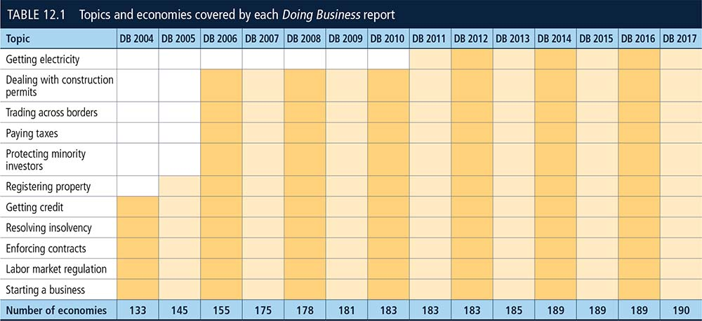
Note: Data for the economies added to the sample each year are back-calculated to the previous year. The exceptions are Kosovo and Montenegro, which were added to the sample after they became members of the World Bank Group. Eleven cities (though no additional economies) were added to the sample starting in Doing Business 2015. The data for all sets of indicators in Doing Business 2017 are for June 2016.1
The Doing Business data are collected in a standardized way. To start, the Doing Business team, with academic advisers, designs a questionnaire. The questionnaire uses a simple business case to ensure comparability across economies and over time—with assumptions about the legal form of the business, its size, its location and the nature of its operations. Questionnaires are administered to more than 12,500 local experts, including lawyers, business consultants, accountants, freight forwarders, government officials and other professionals routinely administering or advising on legal and regulatory requirements (table 12.2). These experts have several rounds of interaction with the Doing Business team, involving conference calls, written correspondence and visits by the team. For Doing Business 2017 team members visited 34 economies to verify data and recruit respondents. The data from questionnaires are subjected to numerous rounds of verification, leading to revisions or expansions of the information collected.
TABLE 12.2 How many experts does Doing Business consult?
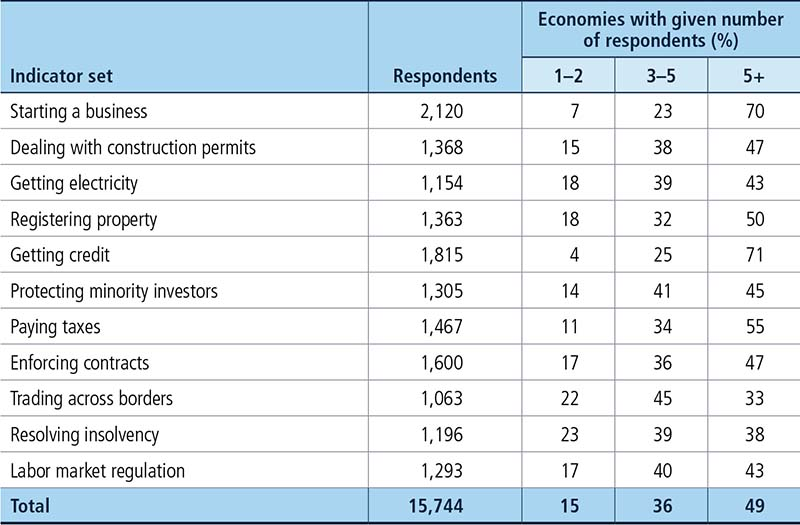
The Doing Business methodology offers several advantages. It is transparent, using factual information about what laws and regulations say and allowing multiple interactions with local respondents to clarify potential misinterpretations of questions. Having representative samples of respondents is not an issue; Doing Business is not a statistical survey, and the texts of the relevant laws and regulations are collected and answers checked for accuracy. The methodology is inexpensive and easily replicable, so data can be collected in a large sample of economies. Because standard assumptions are used in the data collection, comparisons and benchmarks are valid across economies. Finally, the data not only highlight the extent of specific regulatory obstacles to business but also identify their source and point to what might be reformed.
The Doing Business methodology has five limitations that should be considered when interpreting the data. First, for most economies the collected data refer to businesses in the largest business city (which in some economies differs from the capital) and may not be representative of regulation in other parts of the economy. (The exceptions are 11 economies with a population of more than 100 million as of 2013, where Doing Business now also collects data for the second largest business city.)2 To address this limitation, subnational Doing Business indicators were created (box 12.1). Second, the data often focus on a specific business form—generally a limited liability company (or its legal equivalent) of a specified size—and may not be representative of the regulation on other businesses (for example, sole proprietorships). Third, transactions described in a standardized case scenario refer to a specific set of issues and may not represent the full set of issues that a business encounters. Fourth, the measures of time involve an element of judgment by the expert respondents. When sources indicate different estimates, the time indicators reported in Doing Business represent the median values of several responses given under the assumptions of the standardized case.
BOX 12.1 Subnational Doing Business indicators
Subnational Doing Business studies point to differences in business regulations and their implementation—as well as in the pace of regulatory reform—across cities in the same economy or region. For several economies subnational studies are now periodically updated to measure change over time or expand geographic coverage to additional cities.
This year subnational studies were completed in Kenya, Mexico, and the United Arab Emirates. In addition, ongoing studies are updating the data for locations in Colombia and expanding the geographic coverage to cities in Afghanistan, Kazakhstan as well as three European Union member states—Bulgaria, Hungary and Romania. And for the first time, the Mexico subnational study—now in its sixth round of benchmarking—expanded on the Doing Business methodology to examine in greater depth the process of connecting a small business to the water and sewerage networks.
Finally, the methodology assumes that a business has full information on what is required and does not waste time when completing procedures. In practice, completing a procedure may take longer if the business lacks information or is unable to follow up promptly. Alternatively, the business may choose to disregard some burdensome procedures. For both reasons the time delays reported in Doing Business 2017 would differ from the recollection of entrepreneurs reported in the World Bank Enterprise Surveys or other firm-level surveys.
Economy characteristics
Gross national income per capita
Doing Business 2017 reports 2015 income per capita as published in the World Bank’s World Development Indicators 2016. Income is calculated using the Atlas method (in current U.S. dollars). For cost indicators expressed as a percentage of income per capita, 2015 gross national income (GNI) per capita in current U.S. dollars is used as the denominator. GNI data based on the Atlas method were not available for Argentina; Brunei Darussalam; the Comoros; Djibouti; Eritrea; The Gambia; the Islamic Republic of Iran; Lesotho; Malta; the Marshall Islands; Mauritania; the Federated States of Micronesia; Myanmar; Papua New Guinea; Puerto Rico (territory of the United States); San Marino; São Tomé and Príncipe; Somalia; the Syrian Arab Republic; Taiwan, China; Tonga; Vanuatu; República Bolivariana de Venezuela; West Bank and Gaza; the Republic of Yemen. In these cases GDP or GNP per capita data and growth rates from other sources, such as the International Monetary Fund’s World Economic Outlook database and the Economist Intelligence Unit, were used.
Region and income group
Doing Business uses the World Bank regional and income group classifications, available at https://datahelpdesk.worldbank.org/knowledgebase/articles/906519. Regional averages presented in figures and tables in the Doing Business report include economies from all income groups (low, lower middle, upper middle and high income), though high-income OECD economies are assigned the “regional” classification OECD high income.
Population
Doing Business 2017 reports midyear 2015 population statistics as published in the World Bank’s World Development Indicators 2016.
Doing Business 2017 has three major innovations. First it expands the paying taxes indicator set to also cover postfiling processes. Paying taxes is the final indicator set to be changed as part of the methodology update initiated in Doing Business 2015. Second, three indicator sets (starting a business, registering property and enforcing contracts) were expanded to cover a gender dimension, in addition to labor markets regulation which was expanded last year. Starting a business was expanded to also measure the process of starting a business when all shareholders are women. Registering property now also measures equality in ownership rights to property. And enforcing contracts was expanded to measure equality in evidentiary weight for men and women.
Despite the changes in methodology introduced this year, the data under the old and new methodologies are highly correlated. Comparing the ease of doing business rankings as calculated using the Doing Business 2016 data and methodology with the rankings as calculated using the Doing Business 2016 data but the Doing Business 2017 methodology shows a correlation very close to 1 (table 12.3). In previous years the correlations between same-year data under the methodology for that year and the methodology for the subsequent year were even stronger.
TABLE 12.3 Correlation between rankings under old and new methodologies after each set of changes in methodology
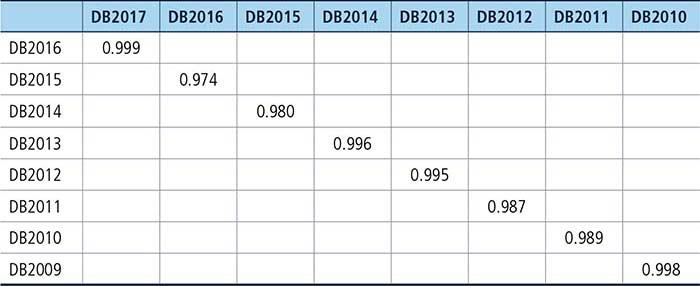
Source: Doing Business database.
Note: The correlation in each case is based on data for the same year but methodologies for consecutive years (for the same year as for the data and for the subsequent year). 0.999 refers to the correlation coefficient between the methodology of Doing Business 2016 and the methodology of Doing Business 2017.
Most laws and regulations underlying the Doing Business data are available on the Doing Business website at http://www.doingbusiness.org. All the sample questionnaires and the details underlying the indicators are also published on the website. Questions on the methodology and challenges to data can be submitted through email at rru@worldbank.org.
Doing Business publishes 24,120 indicators (120 indicators per economy) each year. To create these indicators, the team measures more than 115,000 data points, each of which is made available on the Doing Business website. Historical data for each indicator and economy are available on the website, beginning with the first year the indicator or economy was included in the report. To provide a comparable time series for research, the data set is back-calculated to adjust for changes in methodology and any revisions in data due to corrections. The website also makes available all original data sets used for background papers. The correction rate between Doing Business 2016 and Doing Business 2017 is 7.1%.3
Governments submit queries on the data and provide new information to Doing Business. During the Doing Business 2017 production cycle the team received 110 such queries from governments. In addition, the team held multiple video conferences with government representatives in 46 economies and in-person meetings with government representatives in 34 economies.
Doing Business records all procedures officially required, or commonly done in practice, for an entrepreneur to start up and formally operate an industrial or commercial business, as well as the time and cost to complete these procedures and the paid-in minimum capital requirement (figure 12.1). These procedures include the processes entrepreneurs undergo when obtaining all necessary approvals, licenses, permits and completing any required notifications, verifications or inscriptions for the company and employees with relevant authorities. The ranking of economies on the ease of starting a business is determined by sorting their distance to frontier scores for starting a business. These scores are the simple average of the distance to frontier scores for each of the component indicators (figure 12.2). The distance to frontier score shows the distance of an economy to the “frontier,” which is derived from the most efficient practice or highest score achieved on each indicator.
FIGURE 12.1 What are the time, cost, paid-in minimum capital and number of procedures to get a local limited liability company up and running?
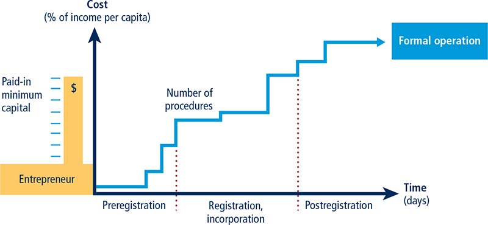
FIGURE 12.2 Starting a business: getting a local limited liability company up and running
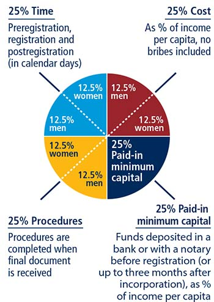
Two types of local liability companies are considered under the starting a business methodology. They are identical in all aspects, except that one company is owned by five married women and other by five married men. The distance to frontier score for each indicator is the average of the scores obtained for each of the component indicators for both of these standardized companies.
After a study of laws, regulations and publicly available information on business entry, a detailed list of procedures is developed, along with the time and cost to comply with each procedure under normal circumstances and the paid-in minimum capital requirement. Subsequently, local incorporation lawyers, notaries and government officials complete and verify the data.
Information is also collected on the sequence in which procedures are to be completed and whether procedures may be carried out simultaneously. It is assumed that any required information is readily available and that the entrepreneur will pay no bribes. If answers by local experts differ, inquiries continue until the data are reconciled.
To make the data comparable across economies, several assumptions about the businesses and the procedures are used.
The business:
▪ Is a limited liability company (or its legal equivalent). If there is more than one type of limited liability company in the economy, the limited liability form most common among domestic firms is chosen. Information on the most common form is obtained from incorporation lawyers or the statistical office.
▪ Operates in the economy’s largest business city. For 11 economies the data are also collected for the second largest business city (table 12A.1 at the end of the data notes).
▪ Is 100% domestically owned and has five owners, none of whom is a legal entity.
▪ Has start-up capital of 10 times income per capita.
▪ Performs general industrial or commercial activities, such as the production or sale to the public of products or services. The business does not perform foreign trade activities and does not handle products subject to a special tax regime, for example, liquor or tobacco. It is not using heavily polluting production processes.
▪ Leases the commercial plant or offices and is not a proprietor of real estate.
▪ The amount of the annual lease for the office space is equivalent to 1 times income per capita.
▪ The size of the entire office space is approximately 929 square meters (10,000 square feet).
▪ Does not qualify for investment incentives or any special benefits.
▪ Has at least 10 and up to 50 employees one month after the commencement of operations, all of them domestic nationals.
▪ Has a turnover of at least 100 times income per capita.
▪ Has a company deed 10 pages long.
The owners:
▪ Have reached the legal age of majority and are capable of making decisions as an adult. If there is no legal age of majority, they are assumed to be 30 years old.
▪ Are sane, competent, in good health and have no criminal record.
▪ Are married, the marriage is monogamous and registered with the authorities.
▪ Where the answer differs according to the legal system applicable to the woman or man in question (as may be the case in economies where there is legal plurality), the answer used will be the one that applies to the majority of the population.
A procedure is defined as any interaction of the company founders with external parties (for example, government agencies, lawyers, auditors or notaries) or spouses (if legally required). Interactions between company founders or company officers and employees are not counted as procedures. Procedures that must be completed in the same building but in different offices or at different counters are counted as separate procedures. If founders have to visit the same office several times for different sequential procedures, each is counted separately. The founders are assumed to complete all procedures themselves, without middlemen, facilitators, accountants or lawyers, unless the use of such a third party is mandated by law or solicited by the majority of entrepreneurs. If the services of professionals are required, procedures conducted by such professionals on behalf of the company are counted as separate procedures. Each electronic procedure is counted as a separate procedure. Approval from spouses to own a business or leave the home are considered procedures if required by law or if by failing to do he or she will suffer consequences under the law, such as the loss of right to financial maintenance. Documents or permission required by only one gender for company registration and operation, opening a bank account or obtaining a national identification card are considered additional procedures. Only procedures that are required for one spouse but not the other are counted.
Both pre- and post-incorporation procedures that are officially required or commonly done in practice for an entrepreneur to formally operate a business are recorded (table 12.4). Any interaction with an external party within three months of registration will be considered a procedure, except value added tax or goods and services tax registration which will be counted whenever the assumed turnover exceeds the determined threshold.
TABLE 12.4 What do the starting a business indicators measure?
Procedures to legally start and formally operate a company (number) |
Preregistration (for example, name verification or reservation, notarization) |
Registration in the economy’s largest business citya |
Postregistration (for example, social security registration, company seal) |
Obtaining approval from spouse to start a business, to leave the home to register the company or open a bank account. |
Obtaining any gender specific document for company registration and operation, national identification card or opening a bank account. |
Time required to complete each procedure (calendar days) |
Does not include time spent gathering information |
Each procedure starts on a separate day (two procedures cannot start on the same day)—though procedures that can be fully completed online are an exception to this rule |
Registration process considered completed once final incorporation document is received or company can officially start operating |
No prior contact with officials takes place |
Cost required to complete each procedure (% of income per capita) |
Official costs only, no bribes |
No professional fees unless services required by law or commonly used in practice |
Paid-in minimum capital (% of income per capita) |
Funds deposited in a bank or with a notary before registration (or up to three months after incorporation) |
a. For 11 economies the data are also collected for the second largest business city.
Procedures required for official correspondence or transactions with public agencies are also included. For example, if a company seal or stamp is required on official documents, such as tax declarations, obtaining the seal or stamp is counted. Similarly, if a company must open a bank account in order to complete any subsequent procedure—such as registering for value added tax or showing proof of minimum capital deposit—this transaction is included as a procedure. Shortcuts are counted only if they fulfill four criteria: they are legal, they are available to the general public, they are used by the majority of companies, and avoiding them causes delays.
Only procedures required of all businesses are covered. Industry-specific procedures are excluded. For example, procedures to comply with environmental regulations are included only when they apply to all businesses conducting general commercial or industrial activities. Procedures that the company undergoes to connect to electricity, water, gas and waste disposal services are not included in the starting a business indicators.
Time is recorded in calendar days. The measure captures the median duration that incorporation lawyers or notaries indicate is necessary in practice to complete a procedure with minimum follow-up with government agencies and no unofficial payments. It is assumed that the minimum time required for each procedure is one day, except for procedures that can be fully completed online, for which the time required is recorded as half a day. Although procedures may take place simultaneously, they cannot start on the same day (that is, simultaneous procedures start on consecutive days), again with the exception of procedures that can be fully completed online. A registration process is considered completed once the company has received the final incorporation document or can officially commence business operations. If a procedure can be accelerated legally for an additional cost, the fastest procedure is chosen if that option is more beneficial to the economy’s ranking. When obtaining spouse’s approval, it is assumed that permission is granted at no additional cost unless the permission needs to be notarized. It is assumed that the entrepreneur does not waste time and commits to completing each remaining procedure without delay. The time that the entrepreneur spends on gathering information is ignored. It is assumed that the entrepreneur is aware of all entry requirements and their sequence from the beginning but has had no prior contact with any of the officials involved.
Cost is recorded as a percentage of the economy’s income per capita. It includes all official fees and fees for legal or professional services if such services are required by law or commonly used in practice. Fees for purchasing and legalizing company books are included if these transactions are required by law. Although value added tax registration can be counted as a separate procedure, value added tax is not part of the incorporation cost. The company law, the commercial code and specific regulations and fee schedules are used as sources for calculating costs. In the absence of fee schedules, a government officer’s estimate is taken as an official source. In the absence of a government officer’s estimate, estimates by incorporation lawyers are used. If several incorporation lawyers provide different estimates, the median reported value is applied. In all cases the cost excludes bribes.
The paid-in minimum capital requirement reflects the amount that the entrepreneur needs to deposit in a bank or with a notary before registration or up to three months after incorporation and is recorded as a percentage of the economy’s income per capita. The amount is typically specified in the commercial code or the company law. Many economies require minimum capital but allow businesses to pay only a part of it before registration, with the rest to be paid after the first year of operation. In Turkey in June 2015, for example, the minimum capital requirement was 10,000 Turkish liras, of which one-fourth needed to be paid before registration. The paid-in minimum capital recorded for Turkey is therefore 2,500 Turkish liras, or 10.2% of income per capita.
The starting a business indicator set tracks changes related to the ease of incorporating and formally operating a limited liability company every year. Depending on the impact on the data, certain changes are classified as reforms and listed in the summaries of Doing Business reforms in the 2015/2016 section of the report in order to acknowledge the implementation of significant changes. Reforms are divided into two types: those that make it easier to do business and those changes that make it more difficult to do business. The starting a business indicator set uses one criterion to recognize a reform.
The aggregate gap on the overall distance to frontier of the indicator set is used to assess the impact of data changes. Any data update that leads to a change of two or more percentage points on the relative distance to frontier gap is classified as a reform (for more details on the relative gap see the chapter on the distance to frontier and ease of doing business ranking). For example if the implementation of a new one-stop shop for company registration reduces time and procedures in a way that the overall relative gap decreases by two percentage points or more, the change is classified as a reform. On the contrary, minor fee updates or other small changes in the indicators that have an aggregate impact of less than two percentage points on the relative gap are not classified as a reform, but their impact is still reflected in the most updated indicators for this indicator set.
The data details on starting a business can be found for each economy at http://www.doingbusiness.org. This methodology was developed by Djankov and others (2002) and is adopted here with minor changes.
Doing Business records all procedures required for a business in the construction industry to build a warehouse, along with the time and cost to complete each procedure. In addition, Doing Business measures the building quality control index, evaluating the quality of building regulations, the strength of quality control and safety mechanisms, liability and insurance regimes, and professional certification requirements. Information is collected through a questionnaire administered to experts in construction licensing, including architects, civil engineers, construction lawyers, construction firms, utility service providers, and public officials who deal with building regulations, including approvals, permit issuance, and inspections.
The ranking of economies on the ease of dealing with construction permits is determined by sorting their distance to frontier scores for dealing with construction permits. These scores are the simple average of the distance to frontier scores for each of the component indicators (figure 12.3).
FIGURE 12.3 Dealing with construction permits: efficiency and quality of building regulation
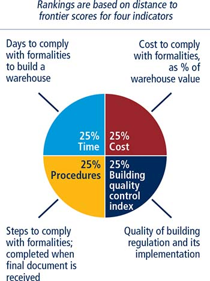
Doing Business divides the process of building a warehouse into distinct procedures in the questionnaire and solicits data for calculating the time and cost to complete each procedure (figure 12.4). These procedures include, but are not limited to:
FIGURE 12.4 What are the time, cost and number of procedures to comply with formalities to build a warehouse?
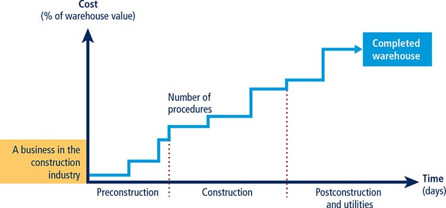
▪ Obtaining and submitting all relevant project-specific documents (for example, building plans, site maps and certificates of urbanism) to the authorities.
▪ Hiring external third-party supervisors, consultants, engineers or inspectors (if necessary).
▪ Obtaining all necessary clearances, licenses, permits and certificates.
▪ Submitting all required notifications.
▪ Requesting and receiving all necessary inspections (unless completed by a hired private, third-party inspector).
Doing Business also records procedures for obtaining connections for water and sewerage. Procedures necessary to register the warehouse so that it can be used as collateral or transferred to another entity are also counted.
To make the data comparable across economies, several assumptions about the construction company, the warehouse project and the utility connections are used.
The construction company (BuildCo):
▪ Is a limited liability company (or its legal equivalent);
▪ Operates in the economy’s largest business city. For 11 economies the data are also collected for the second largest business city (table 12A.1);
▪ Is 100% domestically and privately owned;
▪ Has five owners, none of whom is a legal entity;
▪ Is fully licensed and insured to carry out construction projects, such as building warehouses;
▪ Has 60 builders and other employees, all of them nationals with the technical expertise and professional experience necessary to obtain construction permits and approvals;
▪ Has a licensed architect and a licensed engineer, both registered with the local association of architects or engineers. BuildCo is not assumed to have any other employees who are technical or licensed specialists, such as geological or topographical experts;
▪ Has paid all taxes and taken out all necessary insurance applicable to its general business activity (for example, accidental insurance for construction workers and third-person liability);
▪ Owns the land on which the warehouse will be built and will sell the warehouse upon its completion.
The warehouse:
▪ Will be used for general storage activities, such as storage of books or stationery. The warehouse will not be used for any goods requiring special conditions, such as food, chemicals, or pharmaceuticals;
▪ Will have two stories, both above ground, with a total constructed area of approximately 1,300.6 square meters (14,000 square feet). Each floor will be 3 meters (9 feet, 10 inches) high;
▪ Will have road access and be located in the periurban area of the economy’s largest business city (that is, on the fringes of the city but still within its official limits). For 11 economies the data are also collected for the second largest business city;
▪ Will not be located in a special economic or industrial zone;
▪ Will be located on a land plot of approximately 929 square meters (10,000 square feet) that is 100% owned by BuildCo and is accurately registered in the cadastre and land registry;
▪ Is valued at 50 times income per capita;
▪ Will be a new construction (with no previous construction on the land), with no trees, natural water sources, natural reserves, or historical monuments of any kind on the plot;
▪ Will have complete architectural and technical plans prepared by a licensed architect. If preparation of the plans requires such steps as obtaining further documentation or getting prior approvals from external agencies, these are counted as procedures;
▪ Will include all technical equipment required to be fully operational;
▪ Will take 30 weeks to construct (excluding all delays due to administrative and regulatory requirements);
The water and sewerage connections:
▪ Will be 150 meters (492 feet) from the existing water source and sewer tap. If there is no water delivery infrastructure in the economy, a borehole will be dug. If there is no sewerage infrastructure, a septic tank in the smallest size available will be installed or built;
▪ Will not require water for fire protection reasons; a fire extinguishing system (dry system) will be used instead. If a wet fire protection system is required by law, it is assumed that the water demand specified below also covers the water needed for fire protection;
▪ Will have an average water use of 662 liters (175 gallons) a day and an average wastewater flow of 568 liters (150 gallons) a day. Will have a peak water use of 1,325 liters (350 gallons) a day and a peak wastewater flow of 1,136 liters (300 gallons) a day;
▪ Will have a constant level of water demand and wastewater flow throughout the year;
▪ Will be 1 inch in diameter for the water connection and 4 inches in diameter for the sewerage connection.
A procedure is any interaction of the building company’s employees, managers, or any party acting on behalf of the company with external parties, including government agencies, notaries, the land registry, the cadastre, utility companies, and public inspectors—and the hiring of external private inspectors and technical experts where needed. Interactions between company employees, such as development of the warehouse plans and internal inspections, are not counted as procedures. However, interactions with external parties that are required for the architect to prepare the plans and drawings (such as obtaining topographic or geological surveys), or to have such documents approved or stamped by external parties, are counted as procedures. Procedures that the company undergoes to connect the warehouse to water and sewerage are included. All procedures that are legally required and that are done in practice by the majority of companies to build a warehouse are counted, even if they may be avoided in exceptional cases. This includes obtaining technical conditions for electricity or clearance of the electrical plans only if they are required to obtain a building permit (table 12.5).
TABLE 12.5 What do the indicators on the efficiency of construction permitting measure?
Procedures to legally build a warehouse (number) |
Submitting all relevant documents and obtaining all necessary clearances, licenses, permits and certificates |
Submitting all required notifications and receiving all necessary inspections |
Obtaining utility connections for water and sewerage |
Registering the warehouse after its completion (if required for use as collateral or for transfer of the warehouse) |
Time required to complete each procedure (calendar days) |
Does not include time spent gathering information |
Each procedure starts on a separate day—though procedures that can be fully completed online are an exception to this rule |
Procedure considered completed once final document is received |
No prior contact with officials |
Cost required to complete each procedure (% of warehouse value) |
Official costs only, no bribes |
Time is recorded in calendar days. The measure captures the median duration that local experts indicate is necessary to complete a procedure in practice. It is assumed that the minimum time required for each procedure is one day, except for procedures that can be fully completed online, for which the time required is recorded as half a day. Although procedures may take place simultaneously, they cannot start on the same day (that is, simultaneous procedures start on consecutive days), again with the exception of procedures that can be fully completed online. If a procedure can be accelerated legally for an additional cost and the accelerated procedure is used by the majority of companies, the fastest time to complete a procedure is chosen. It is assumed that BuildCo does not waste time and commits to completing each remaining procedure without delay. The time that BuildCo spends on gathering information is not taken into account. It is assumed that BuildCo is aware of all building requirements and their sequence from the beginning.
Cost is recorded as a percentage of the warehouse value (assumed to be 50 times income per capita). Only official costs are recorded. All fees associated with completing the procedures to legally build a warehouse are recorded, including those associated with obtaining land use approvals and preconstruction design clearances; receiving inspections before, during and after construction; obtaining utility connections; and registering the warehouse at the property registry. Nonrecurring taxes required for the completion of the warehouse project are also recorded. Sales taxes (such as value added tax) or capital gains taxes are not recorded. Nor are deposits that must be paid up front and are later refunded. The building code, information from local experts, and specific regulations and fee schedules are used as sources for costs. If several local partners provide different estimates, the median reported value is used.
The building quality control index is based on six other indices—the quality of building regulations, quality control before, during and after construction, liability and insurance regimes, and professional certifications indices (table 12.6). The indicator is based on the same case study assumptions as the measures of efficiency.
TABLE 12.6 What do the indicators on building quality control measure?
Quality of building regulations index (0–2) |
Accessibility of building regulations |
Clarity of requirements for obtaining a building permit |
Quality control before construction index (0–1) |
Whether licensed or technical experts approve building plans |
Quality control during construction index (0–3) |
Types of inspections legally mandated during construction |
Implementation of legally mandated inspections in practice |
Quality control after construction index (0–3) |
Final inspection legally mandated after construction |
Implementation of legally mandated final inspection in practice |
Liability and insurance regimes index (0–2) |
Parties held legally liable for structural flaws after building occupancy |
Parties legally mandated to obtain insurance to cover structural flaws after building occupancy or insurance is commonly obtained in practice |
Professional certifications index (0–4) |
Qualification requirements for individual who approves building plans |
Qualification requirements for individual who supervises construction or conducts inspections |
Building quality control index (0–15) |
Sum of the quality of building regulations, quality control before construction, quality control during construction, quality control after construction, liability and insurance regimes, and professional certifications indices |
The quality of building regulations index has two components:
▪ Whether building regulations are easily accessible. A score of 1 is assigned if building regulations (including the building code) or regulations dealing with construction permits are available on a website that is updated as new regulations are passed; 0.5 if the building regulations are available free of charge (or for a nominal fee) at the relevant permit-issuing authority; 0 if the building regulations must be purchased or if they are not made easily accessible anywhere.
▪ Whether the requirements for obtaining a building permit are clearly specified. A score of 1 is assigned if the building regulations (including the building code) or any accessible website, brochure, or pamphlet clearly specifies the list of required documents to submit, the fees to be paid, and all required preapprovals of the drawings or plans by the relevant agencies; 0 if none of these sources specify any of these requirements or if these sources specify fewer than the three requirements mentioned above.
The index ranges from 0 to 2, with higher values indicating clearer and more transparent building regulations. In the United Kingdom, for example, all relevant legislation can be found on an official government website (a score of 1). The legislation specifies the list of required documents to submit, the fees to be paid, and all required preapprovals of the drawings or plans by the relevant agencies (a score of 1). Adding these numbers gives the United Kingdom a score of 2 on the quality of building regulations index.
The quality control before construction index has one component:
▪ Whether by law, a licensed architect or licensed engineer is part of the committee or team that reviews and approves building permit applications and whether that person has the authority to refuse an application if the plans are not in conformity with regulations. A score of 1 is assigned if the national association of architects or engineers (or its equivalent) must review the building plans, if an independent firm or expert who is a licensed architect or engineer must review the plans, if the architect or engineer who prepared the plans must submit an attestation to the permit-issuing authority stating that the plans are in compliance with the building regulations or if a licensed architect or engineer is part of the committee or team that approves the plans at the relevant permit-issuing authority; 0 if no licensed architect or engineer is involved in the review of the plans to ensure their compliance with building regulations.
The index ranges from 0 to 1, with higher values indicating better quality control in the review of the building plans. In Rwanda, for example, the city hall in Kigali must review the building permit application, including the plans and drawings, and both a licensed architect and a licensed engineer are part of the team that reviews the plans and drawings. Rwanda therefore receives a score of 1 on the quality control before construction index.
The quality control during construction index has two components:
▪ Whether inspections are mandated by law during the construction process. A score of 2 is assigned if an in-house supervising engineer (for example, an employee of the building company), an external supervising engineer or a government agency is legally mandated to conduct risk-based inspections during construction. A score of 1 is assigned if an in-house engineer (that is, an employee of the building company), an external supervising engineer or an external inspections firm is legally mandated to conduct technical inspections at different stages during the construction of the building or if a government agency is legally mandated to conduct only technical inspections at different stages during the construction. A score of 0 is assigned if a government agency is legally mandated to conduct unscheduled inspections, or if no technical inspections are mandated by law.
▪ Whether inspections during construction are implemented in practice. A score of 1 is assigned if the legally mandated inspections during construction always occur in practice; 0 if the legally mandated inspections do not occur in practice, if the inspections occur most of the time but not always, if inspections are not mandated by law regardless of whether or not they commonly occur in practice.
The index ranges from 0 to 3, with higher values indicating better quality control during the construction process. In Antigua and Barbuda, for example, the Development Control Authority is legally mandated to conduct phased inspections under the Physical Planning Act of 2003 (a score of 1). However, the Development Control Authority rarely conducts these inspections in practice (a score of 0). Adding these numbers gives Antigua and Barbuda a score of 1 on the quality control during construction index.
The quality control after construction index has two components:
▪ Whether a final inspection is mandated by law in order to verify that the building was built in compliance with the approved plans and existing building regulations. A score of 2 is assigned if an in-house supervising engineer (that is, an employee of the building company), an external supervising engineer or an external inspections firm is legally mandated to verify that the building has been built in accordance with the approved plans and existing building regulations, or if a government agency is legally mandated to conduct a final inspection upon completion of the building; 0 if no final inspection is mandated by law after construction and no third party is required to verify that the building has been built in accordance with the approved plans and existing building regulations.
▪ Whether the final inspection is implemented in practice. A score of 1 is assigned if the legally mandated final inspection after construction always occurs in practice or if a supervising engineer or firm attests that the building has been built in accordance with the approved plans and existing building regulations; 0 if the legally mandated final inspection does not occur in practice, if the legally mandated final inspection occurs most of the time but not always, or if a final inspection is not mandated by law regardless of whether or not it commonly occurs in practice.
The index ranges from 0 to 3, with higher values indicating better quality control after the construction process. In Haiti, for example, the Municipality of Port-au-Prince is legally mandated to conduct a final inspection under the National Building Code of 2012 (a score of 2). However, the final inspection does not occur in practice (a score of 0). Adding these numbers gives Haiti a score of 2 on the quality control after construction index.
The liability and insurance regimes index has two components:
▪ Whether any parties involved in the construction process are held legally liable for latent defects such as structural flaws or problems in the building once it is in use. A score of 1 is assigned if at least two of the following parties are held legally liable for structural flaws or problems in the building once it is in use: the architect or engineer who designed the plans for the building, the professional or agency that conducted technical inspections, or the construction company; 0.5 if only one of the parties is held legally liable for structural flaws or problems in the building once it is in use; 0 if no party is held legally liable for structural flaws or problems in the building once it is in use, if the project owner or investor is the only party held liable, if liability is determined in court, or if liability is stipulated in a contract.
▪ Whether any parties involved in the construction process is legally required to obtain a latent defect liability—or decennial (10 years) liability—insurance policy to cover possible structural flaws or problems in the building once it is in use. A score of 1 is assigned if the architect or engineer who designed the plans for the building, the professional or agency that conducted the technical inspections, the construction company, or the project owner or investor is required by law to obtain either a decennial liability insurance policy or a latent defect liability insurance to cover possible structural flaws or problems in the building once it is in use or if a decennial liability insurance policy or a latent defect liability insurance is commonly obtained in practice by the majority of any of these parties even if not required by law; a score of 0 is assigned if no party is required by law to obtain either a decennial liability insurance or a latent defect liability insurance and such insurance is not commonly obtained in practice by any party, if the requirement to obtain an insurance policy is stipulated in a contract, if any party must obtain a professional insurance or an all risk insurance to cover the safety of workers or any other defects during construction but not a decennial liability insurance or a latent defect liability insurance that would cover defects after the building is in use, or if any party is required to pay for any damages caused on their own without having to obtain an insurance policy.
The index ranges from 0 to 2, with higher values indicating more stringent latent defect liability and insurance regimes. In Madagascar, for example, under article 1792 of the Civil Code both the architect who designed the plans and the construction company are legally held liable for latent defects for a period of 10 years after the completion of the building (a score of 1). However, there is no legal requirement for any party to obtain a decennial liability insurance policy to cover structural defects, nor do most parties obtain such insurance in practice (a score of 0). Adding these numbers gives Madagascar a score of 1 on the liability and insurance regimes index.
The professional certifications index has two components:
▪ The qualification requirements of the professional responsible for verifying that the architectural plans or drawings are in compliance with the building regulations. A score of 2 is assigned if this professional must have a minimum number of years of practical experience, must have a university degree (a minimum of a bachelor’s) in architecture or engineering, and must also either be a registered member of the national order (association) of architects or engineers or pass a qualification exam. A score of 1 is assigned if the professional must have a university degree (a minimum of a bachelor’s) in architecture or engineering and must also either have a minimum number of years of practical experience or be a registered member of the national order (association) of architects or engineers or pass a qualification exam. A score of 0 is assigned if the professional must meet only one of the above requirements, if the professional must meet two of the requirements but neither of the two is to have a university degree, or if the professional is subject to no qualification requirements.
▪ The qualification requirements of the professional who conducts the technical inspections during construction. A score of 2 is assigned if this professional must have a minimum number of years of practical experience, must have a university degree (a minimum of a bachelor’s) in engineering, and must also either be a registered member of the national order of engineers or pass a qualification exam. A score of 1 is assigned if the professional must have a university degree (a minimum of a bachelor’s) in engineering and must also either have a minimum number of years of practical experience or be a registered member of the national order (association) of engineers or pass a qualification exam. A score of 0 is assigned if the professional must meet only one of the requirements, if the professional must meet two of the requirements but neither of the two is to have a university degree, or if the professional is subject to no qualification requirements.
The index ranges from 0 to 4, with higher values indicating greater professional certification requirements. In Cambodia, for example, the professional responsible for verifying that the architectural plans or drawings are in compliance with the building regulations must have a relevant university degree and must pass a qualification exam (a score of 1). However, the professional conducting technical inspections during construction must only have a university degree (a score of 0). Adding these numbers gives Cambodia a score of 1 on the professional certifications index.
The building quality control index is the sum of the scores on the quality of building regulations, quality control before construction, quality control during construction, quality control after construction, liability and insurance regimes, and professional certifications indices. The index ranges from 0 to 15, with higher values indicating better quality control and safety mechanisms in the construction regulatory system.
If an economy issued no building permits between June 2015 and June 2016 or if the applicable building legislation in the economy is not being implemented, the economy receives a “no practice” mark on the procedures, time and cost indicators. In addition, a “no practice” economy receives a score of 0 on the building quality control index even if its legal framework includes provisions related to building quality control and safety mechanisms.
The dealing with construction permits indicator set tracks changes related to the efficiency and quality of construction permitting systems every year. Depending on the impact on the data certain changes are classified as reforms and listed in the summaries of Doing Business reforms in 2015/2016 section of the report in order to acknowledge the implementation of significant changes. Reforms are divided into two types: those that make it easier to do business and those changes that make it more difficult to do business. The dealing with construction permits indicator set uses only one criterion to recognize a reform.
The aggregate gap on the overall distance to frontier of the indicator set is used to assess the impact of data changes. Any data update that leads to a change of 2 or more percentage points on the relative distance to frontier gap is classified as a reform (for more details on the relative gap, see the chapter on the distance to frontier and ease of doing business ranking). For example if the implementation of a new electronic permitting system reduces time in a way that the overall relative gap decreases by 2 percentage points or more, such a change is classified as a reform. On the contrary, minor fee updates or other smaller changes in the indicators that have an aggregate impact of less than 2 percentage points on the relative gap are not classified as a reform, but their impact is still reflected on the most updated indicators for this indicator set.
The data details on dealing with construction permits can be found for each economy at http://www.doingbusiness.org.
Doing Business records all procedures required for a business to obtain a permanent electricity connection and supply for a standardized warehouse (figure 12.5). These procedures include applications and contracts with electricity utilities, all necessary inspections and clearances from the distribution utility and other agencies, and the external and final connection works. The questionnaire divides the process of getting an electricity connection into distinct procedures and solicits data for calculating the time and cost to complete each procedure.
FIGURE 12.5 Doing Business measures the connection process at the level of distribution utilities
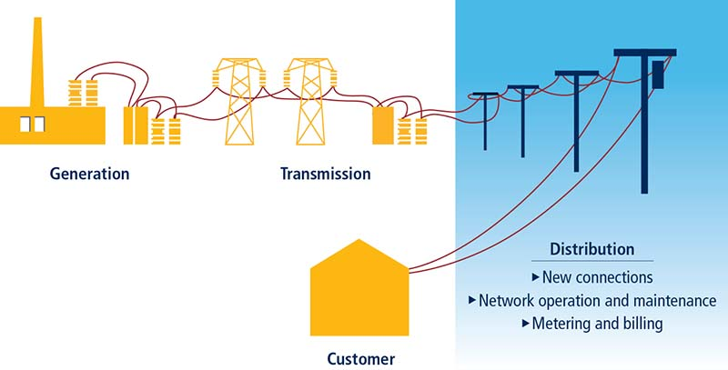
In addition, Doing Business also measures the reliability of supply and transparency of tariffs index (included in the aggregate distance to frontier score and ranking on the ease of doing business) and the price of electricity (omitted from these aggregate measures). The reliability of supply and transparency of tariffs index encompasses quantitative data on the duration and frequency of power outages as well as qualitative information on the mechanisms put in place by the utility for monitoring power outages and restoring power supply, the reporting relationship between the utility and the regulator for power outages, the transparency and accessibility of tariffs and whether the utility faces a financial deterrent aimed at limiting outages (such as a requirement to compensate customers or pay fines when outages exceed a certain cap).
The ranking of economies on the ease of getting electricity is determined by sorting their distance to frontier scores for getting electricity. These scores are the simple average of the distance to frontier scores for all the component indicators except the price of electricity (figure 12.6).
FIGURE 12.6 Getting electricity: efficiency, reliability and transparency
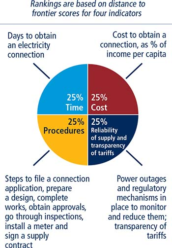
Note: The price of electricity is measured but does not count for the rankings.
Data on reliability of supply are collected from the electricity distribution utilities or regulators, depending upon the specific technical nature of the data. The rest of the data, including data on transparency of tariffs and procedures for obtaining electricity connection, are collected from all market players—the electricity distribution utility, electricity regulatory agencies and independent professionals such as electrical engineers, electrical contractors and construction companies. The electricity distribution utility consulted is the one serving the area (or areas) where warehouses are located. If there is a choice of distribution utilities, the one serving the largest number of customers is selected.
To make the data comparable across economies, several assumptions about the warehouse, the electricity connection and the monthly consumption are used.
The warehouse:
▪ Is owned by a local entrepreneur.
▪ Is located in the economy’s largest business city. For 11 economies the data are also collected for the second largest business city (table 12A.1).
▪ Is located in an area where similar warehouses are typically located. In this area a new electricity connection is not eligible for a special investment promotion regime (offering special subsidization or faster service, for example).
▪ Is located in an area with no physical constraints. For example, the property is not near a railway.
▪ Is a new construction and is being connected to electricity for the first time.
▪ Has two stories, both above ground, with a total surface area of approximately 1,300.6 square meters (14,000 square feet). The plot of land on which it is built is 929 square meters (10,000 square feet).
▪ Is used for storage of goods.
The electricity connection:
▪ Is a permanent one.
▪ Is a three-phase, four-wire Y connection with a subscribed capacity of 140-kilo-volt-ampere (kVA) with a power factor of 1, when 1 kVA = 1 kilowatt (kW).
▪ Has a length of 150 meters. The connection is to either the low- or medium-voltage distribution network and is either overhead or underground, whichever is more common in the area where the warehouse is located.
▪ Requires works that involve the crossing of a 10-meter wide road (by excavation, overhead lines) but are all carried out on public land. There is no crossing of other owners’ private property because the warehouse has access to a road.
▪ Includes only negligible length in the customer’s private domain.
▪ Does not require work to install the internal wiring of the warehouse. This has already been completed up to and including the customer’s service panel or switchboard and the meter base.
▪ It is assumed that the warehouse operates 30 days a month from 9:00 a.m. to 5:00 p.m. (8 hours a day), with equipment utilized at 80% of capacity on average and that there are no electricity cuts (assumed for simplicity reasons).
▪ The monthly energy consumption is 26,880 kilowatt-hours (kWh); hourly consumption is 112 kWh.
▪ If multiple electricity suppliers exist, the warehouse is served by the cheapest supplier.
▪ Tariffs effective in March of the current year are used for calculation of the price of electricity for the warehouse. Although March has 31 days, for calculation purposes only 30 days are used.
A procedure is defined as any interaction of the company’s employees or its main electrician or electrical engineer (that is, the one who may have done the internal wiring) with external parties, such as the electricity distribution utility, electricity supply utilities, government agencies, electrical contractors and electrical firms. Interactions between company employees and steps related to the internal electrical wiring, such as the design and execution of the internal electrical installation plans, are not counted as procedures. Procedures that must be completed with the same utility but with different departments are counted as separate procedures (table 12.7).
TABLE 12.7 What do the getting electricity indicators measure?
Procedures to obtain an electricity connection (number) |
Submitting all relevant documents and obtaining all necessary clearances and permits |
Completing all required notifications and receiving all necessary inspections |
Obtaining external installation works and possibly purchasing material for these works |
Concluding any necessary supply contract and obtaining final supply |
Time required to complete each procedure (calendar days) |
Is at least one calendar day |
Each procedure starts on a separate day |
Does not include time spent gathering information |
Reflects the time spent in practice, with little follow-up and no prior contact with officials |
Cost required to complete each procedure (% of income per capita) |
Official costs only, no bribes |
Value added tax excluded |
Reliability of supply and transparency of tariffs index (0–8) |
Duration and frequency of power outages |
Tools to monitor power outages |
Tools to restore power supply |
Regulatory monitoring of utilities’ performance |
Financial deterrents aimed at limiting outages |
Transparency and accessibility of tariffs |
Price of electricity (cents per kilowatt-hour) |
Price based on monthly bill for commercial warehouse in case study |
Note: While Doing Business measures the price of electricity, it does not include these data when calculating the distance to frontier score for getting electricity or the ranking on the ease of getting electricity.
The company’s employees are assumed to complete all procedures themselves unless the use of a third party is mandated (for example, if only an electrician registered with the utility is allowed to submit an application). If the company can, but is not required to, request the services of professionals (such as a private firm rather than the utility for the external works), these procedures are recorded if they are commonly done. For all procedures only the most likely cases (for example, more than 50% of the time the utility has the material) and those followed in practice for connecting a warehouse to electricity are counted.
Time is recorded in calendar days. The measure captures the median duration that the electricity utility and experts indicate is necessary in practice, rather than required by law, to complete a procedure with minimum follow-up and no extra payments. It is assumed that the minimum time required for each procedure is one day. Although procedures may take place simultaneously, they cannot start on the same day (that is, simultaneous procedures start on consecutive days). It is assumed that the company does not waste time and commits to completing each remaining procedure without delay. The time that the company spends on gathering information is not taken into account. It is assumed that the company is aware of all electricity connection requirements and their sequence from the beginning.
Cost is recorded as a percentage of the economy’s income per capita. Costs are recorded exclusive of value added tax. All the fees and costs associated with completing the procedures to connect a warehouse to electricity are recorded, including those related to obtaining clearances from government agencies, applying for the connection, receiving inspections of both the site and the internal wiring, purchasing material, getting the actual connection works and paying a security deposit. Information from local experts and specific regulations and fee schedules are used as sources for costs. If several local partners provide different estimates, the median reported value is used. In all cases the cost excludes bribes.
Utilities may require security deposits as a guarantee against the possible failure of customers to pay their consumption bills. For this reason the security deposit for a new customer is most often calculated as a function of the customer’s estimated consumption.
Doing Business does not record the full amount of the security deposit. If the deposit is based on the customer’s actual consumption, this basis is the one assumed in the case study. Rather than the full amount of the security deposit, Doing Business records the present value of the losses in interest earnings experienced by the customer because the utility holds the security deposit over a prolonged period, in most cases until the end of the contract (assumed to be after five years). In cases where the security deposit is used to cover the first monthly consumption bills, it is not recorded. To calculate the present value of the lost interest earnings, the end-2015 lending rates from the International Monetary Fund’s International Financial Statistics are used. In cases where the security deposit is returned with interest, the difference between the lending rate and the interest paid by the utility is used to calculate the present value.
In some economies the security deposit can be put up in the form of a bond: the company can obtain from a bank or an insurance company a guarantee issued on the assets it holds with that financial institution. In contrast to the scenario in which the customer pays the deposit in cash to the utility, in this scenario the company does not lose ownership control over the full amount and can continue using it. In return the company will pay the bank a commission for obtaining the bond. The commission charged may vary depending on the credit standing of the company. The best possible credit standing and thus the lowest possible commission are assumed. Where a bond can be put up, the value recorded for the deposit is the annual commission times the five years assumed to be the length of the contract. If both options exist, the cheaper alternative is recorded.
In Honduras in June 2016 a customer requesting a 140-kVA electricity connection would have had to put up a security deposit of 126,894 Honduran lempiras ($5,616) in cash or check, and the deposit would have been returned only at the end of the contract. The customer could instead have invested this money at the prevailing lending rate of 20.66%. Over the five years of the contract this would imply a present value of lost interest earnings of 77,273 lempiras ($3,420). In contrast, if the customer chose to settle the deposit with a bank guarantee at an annual rate of 2.5%, the amount lost over the five years would be just 15,862 lempiras ($702).
Doing Business uses the system average interruption duration index (SAIDI) and the system average interruption frequency index (SAIFI) to measure the duration and frequency of power outages in the largest business city of each economy (for 11 economies the data are also collected for the second largest business city; table 12A.1). SAIDI is the average total duration of outages over the course of a year for each customer served, while SAIFI is the average number of service interruptions experienced by a customer in a year. Annual data (covering the calendar year) are collected from distribution utility companies and national regulators on SAIDI and SAIFI. Both SAIDI and SAIFI estimates include load shedding.
An economy is eligible to obtain a score on the reliability of supply and transparency of tariffs index if the utility collects data on electricity outages (measuring the average total duration of outages per customer and the average number of outages per customer) and the SAIDI value is below a threshold of 100 hours and the SAIFI value below a threshold of 100 outages.
Because the focus is on measuring the reliability of the electricity supply in each economy’s largest business city (and, in 11 economies, also in the second largest business city), an economy is not eligible to obtain a score if outages are too frequent or long-lasting for the electricity supply to be considered reliable—that is, if the SAIDI value exceeds the threshold of 100 hours or the SAIFI value exceeds the threshold of 100 outages.4 An economy is also not eligible to obtain a score on the index if data on power outages are not collected.
For all economies that meet the criteria as determined by Doing Business, a score on the reliability of supply and transparency of tariffs index is calculated on the basis of the following six components:
▪ What the SAIDI and SAIFI values are. If SAIDI and SAIFI are 12 (equivalent to an outage of one hour each month) or below, a score of 1 is assigned. If SAIDI and SAIFI are 4 (equivalent to an outage of one hour each quarter) or below, 1 additional point is assigned. Finally, if SAIDI and SAIFI are 1 (equivalent to an outage of one hour per year) or below, 1 more point is assigned.
▪ What tools are used by the distribution utility to monitor power outages. A score of 1 is assigned if the utility uses automated tools, such as the Supervisory Control and Data Acquisition (SCADA) system; 0 if it relies solely on calls from customers and records and monitors outages manually.
▪ What tools are used by the distribution utility to restore power supply. A score of 1 is assigned if the utility uses automated tools, such as the SCADA system; 0 if it relies solely on manual resources for service restoration, such as field crews or maintenance personnel.
▪ Whether a regulator—that is, an entity separate from the utility—monitors the utility’s performance on reliability of supply. A score of 1 is assigned if the regulator performs periodic or real-time reviews; 0 if it does not monitor power outages and does not require the utility to report on reliability of supply.
▪ Whether financial deterrents exist to limit outages. A score of 1 is assigned if the utility compensates customers when outages exceed a certain cap, if the utility is fined by the regulator when outages exceed a certain cap or if both these conditions are met; 0 if no compensation mechanism of any kind is available.
▪ Whether electricity tariffs are transparent and easily available. A score of 1 is assigned if effective tariffs are available online and customers are notified of a change in tariff a full billing cycle (that is, one month) ahead of time; 0 if not.
The index ranges from 0 to 8, with higher values indicating greater reliability of electricity supply and greater transparency of tariffs. In the Czech Republic, for example, the distribution utility company PREdistribuce uses SAIDI and SAIFI metrics to monitor and collect data on power outages. In 2015 the average total duration of power outages in Prague was 0.49 hours per customer and the average number of outages experienced by a customer was 0.33. Both SAIDI and SAIFI are below the threshold and indicate that there was less than one outage a year per customer, for a total duration of less than one hour. So the economy not only meets the eligibility criteria for obtaining a score on the index, it also receives a score of 3 on the first component of the index. The utility uses an automated system (SCADA) to identify faults in the network (a score of 1) and restore electricity service (a score of 1). The national regulator actively reviews the utility’s performance in providing reliable electricity service (a score of 1) and requires the utility to compensate customers if outages last longer than a maximum period defined by the regulator (a score of 1). Customers are notified of a change in tariffs ahead of the next billing cycle and can easily check effective tariffs online (a score of 1). Adding these numbers gives the Czech Republic a score of 8 on the reliability of supply and transparency of tariffs index.
On the other hand, several economies receive a score of 0 on the reliability of supply and transparency of tariffs index. The reason may be that outages occur more than once a month and none of the mechanisms and tools measured by the index are in place. An economy may also receive a score of 0 if either the SAIDI or SAIFI value (or both) exceeds the threshold of 100. For Papua New Guinea, for example, the SAIDI value (211) exceeds the threshold. Based on the criteria established, Papua New Guinea cannot receive a score on the index even though the country has regulatory monitoring of outages and there is a compensation mechanism for customers.
If an economy issued no new electricity connections to an electrical grid between June 2015 and June 2016, or if electricity is not provided during that period, the economy receives a “no practice” mark on the procedures, time and cost indicators. In addition, a “no practice” economy receives a score of 0 on the reliability of supply and transparency of tariff index even if the utility has in place automated systems for monitoring and restoring outages; there is regulatory oversight of utilities on power interruptions, and public availability of tariffs.
Doing Business measures the price of electricity but does not include these data when calculating the distance to frontier score for getting electricity or the ranking on the ease of getting electricity. (The data are available on the Doing Business website, at http://www.doingbusiness.org.) The data on electricity prices are based on standardized assumptions to ensure comparability across economies.
The price of electricity is measured in U.S. cents per kilowatt-hour. On the basis of the assumptions about monthly consumption, a monthly bill for a commercial warehouse in the largest business city of the economy is computed for the month of March (for 11 economies the data are also collected for the second largest business city; table 12A.1). As noted, the warehouse uses electricity 30 days a month, from 9:00 a.m. to 5:00 p.m., so different tariff schedules may apply if a time-of-use tariff is available.
The getting electricity indicator set tracks changes related to the efficiency of the connection process, as well as the reliability of power supply and transparency of tariffs. Depending on the impact on the data, certain changes are classified as reforms and listed in the summaries of Doing Business reforms in 2015/2016 section of the report in order to acknowledge the implementation of significant changes. Reforms are divided in two types: those that make it easier to do business and those changes that make it more difficult to do business. The getting electricity indicator set uses two criteria to recognize a reform.
First, the aggregate gap on the overall distance to frontier of the indicator set is used to assess the impact of data changes. Any data update that leads to a change of 2 or more percentage points on the relative distance to frontier gap is classified as a reform (for more details on the relative gap, see the chapter on the distance to frontier and ease of doing business ranking). For example if the implementation of a new single window at the utility reduces the time to process new connection requests in a way that the overall relative gap decreases by 2 percentage points or more, such a change is classified as a reform. On the other hand, minor fee updates from the utility or other small changes that have an aggregate impact of less than 2 percentage points on the relative gap are not classified as a reform, but their impact is still reflected on the most updated indicators for this topic.
Second, to be considered a reform, changes in the data must be tied to an initiative led by the utility or by the government—and not an exogenous event. For example if outages increase considerably from one year to the next due to inclement weather, this cannot be considered a reform that makes doing business harder. Similarly, if the cost of electricity-related materials (such as cabling or transformers) decreases due to a currency appreciation, this cannot be considered a reform that makes doing business easier. However, if a utility establishes a one-stop shop to streamline the connection process or if it installs an automated system to improve monitoring of power outages and restoration of electricity services, these actions would be considered reforms that made doing business easier.
The data details on getting electricity can be found for each economy at http://www.doingbusiness.org. The initial methodology was developed by Geginat and Ramalho (2015) and is adopted here with minor changes.
Doing Business records the full sequence of procedures necessary for a business (the buyer) to purchase a property from another business (the seller) and to transfer the property title to the buyer’s name so that the buyer can use the property for expanding its business, use the property as collateral in taking new loans or, if necessary, sell the property to another business. It also measures the time and cost to complete each of these procedures. Doing Business also measures the quality of the land administration system in each economy. The quality of land administration index has five dimensions: reliability of infrastructure, transparency of information, geographic coverage, land dispute resolution and equal access to property rights.
The ranking of economies on the ease of registering property is determined by sorting their distance to frontier scores for registering property. These scores are the simple average of the distance to frontier scores for each of the component indicators (figure 12.7).
FIGURE 12.7 Registering property: efficiency and quality of land administration system
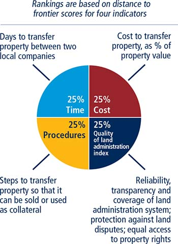
As recorded by Doing Business, the process of transferring property starts with obtaining the necessary documents, such as a copy of the seller’s title if necessary, and conducting due diligence if required. The transaction is considered complete when it is opposable to third parties and when the buyer can use the property, use it as collateral for a bank loan or resell it (figure 12.8). Every procedure required by law or necessary in practice is included, whether it is the responsibility of the seller or the buyer or must be completed by a third party on their behalf. Local property lawyers, notaries and property registries provide information on procedures as well as the time and cost to complete each of them.
FIGURE 12.8 What are the time, cost and number of procedures required to transfer property between two local companies?
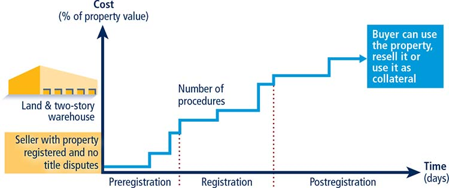
To make the data comparable across economies, several assumptions about the parties to the transaction, the property and the procedures are used.
The parties (buyer and seller):
▪ Are limited liability companies (or the legal equivalent).
▪ Are located in the periurban area of the economy’s largest business city. For 11 economies the data are also collected for the second largest business city (table 12A.1).
▪ Are 100% domestically and privately owned.
▪ Have 50 employees each, all of whom are nationals.
▪ Perform general commercial activities.
The property:
▪ Has a value of 50 times income per capita. The sale price equals the value.
▪ Is fully owned by the seller.
▪ Has no mortgages attached and has been under the same ownership for the past 10 years.
▪ Is registered in the land registry or cadastre, or both, and is free of title disputes.
▪ Is located in a periurban commercial zone, and no rezoning is required.
▪ Consists of land and a building. The land area is 557.4 square meters (6,000 square feet). A two-story warehouse of 929 square meters (10,000 square feet) is located on the land. The warehouse is 10 years old, is in good condition and complies with all safety standards, building codes and other legal requirements. It has no heating system. The property of land and building will be transferred in its entirety.
▪ Will not be subject to renovations or additional building following the purchase.
▪ Has no trees, natural water sources, natural reserves or historical monuments of any kind.
▪ Will not be used for special purposes, and no special permits, such as for residential use, industrial plants, waste storage or certain types of agricultural activities, are required.
▪ Has no occupants, and no other party holds a legal interest in it.
A procedure is defined as any interaction of the buyer or the seller, their agents (if an agent is legally or in practice required) with external parties, including government agencies, inspectors, notaries and lawyers. Interactions between company officers and employees are not considered. All procedures that are legally or in practice required for registering property are recorded, even if they may be avoided in exceptional cases (table 12.8). It is assumed that the buyer follows the fastest legal option available and used by the majority of property owners. Although the buyer may use lawyers or other professionals where necessary in the registration process, it is assumed that the buyer does not employ an outside facilitator in the registration process unless legally or in practice required to do so.
TABLE 12.8 What do the indicators on the efficiency of transferring property measure?
Procedures to legally transfer title on immovable property (number) |
Preregistration procedures (for example, checking for liens, notarizing sales agreement, paying property transfer taxes) |
Registration procedures in the economy’s largest business citya |
Postregistration procedures (for example, filing title with municipality) |
Time required to complete each procedure (calendar days) |
Does not include time spent gathering information |
Each procedure starts on a separate day—though procedures that can be fully completed online are an exception to this rule |
Procedure considered completed once final document is received |
No prior contact with officials |
Cost required to complete each procedure (% of property value) |
Official costs only, no bribes |
No value added or capital gains taxes included |
a. For 11 economies the data are also collected for the second largest business city.
Time is recorded in calendar days. The measure captures the median duration that property lawyers, notaries or registry officials indicate is necessary to complete a procedure. It is assumed that the minimum time required for each procedure is one day, except for procedures that can be fully completed online, for which the time required is recorded as half a day. Although procedures may take place simultaneously, they cannot start on the same day, again with the exception of procedures that can be fully completed online. It is assumed that the buyer does not waste time and commits to completing each remaining procedure without delay. If a procedure can be accelerated for an additional cost, the fastest legal procedure available and used by the majority of property owners is chosen. If procedures can be undertaken simultaneously, it is assumed that they are. It is assumed that the parties involved are aware of all requirements and their sequence from the beginning. Time spent on gathering information is not considered.
Cost is recorded as a percentage of the property value, assumed to be equivalent to 50 times income per capita. Only official costs required by law are recorded, including fees, transfer taxes, stamp duties and any other payment to the property registry, notaries, public agencies or lawyers. Other taxes, such as capital gains tax or value added tax, are excluded from the cost measure. Both costs borne by the buyer and those borne by the seller are included. If cost estimates differ among sources, the median reported value is used.
The quality of land administration index is composed of five other indices: the reliability of infrastructure, transparency of information, geographic coverage, land dispute resolution and equal access to property rights indices (table 12.9). Data are collected for each economy’s largest business city. For 11 economies the data are also collected for the second largest business city.
TABLE 12.9 What do the indicators on the quality of land administration measure?
Reliability of infrastructure index (0–8) |
Type of system for archiving information on land ownership |
Availability of electronic database to check for encumbrances |
Type of system for archiving maps |
Availability of geographic information system |
Link between property ownership registry and mapping system |
Transparency of information index (0–6) |
Accessibility of information on land ownership |
Accessibility of maps of land plots |
Publication of fee schedules, lists of registration documents, service standards |
Availability of a specific and separate mechanism for complaints |
Publication of statistics about the number of property transactions |
Geographic coverage index (0–8) |
Coverage of land registry at the level of the largest business city and the economya |
Coverage of mapping agency at the level of the largest business city and the economya |
Land dispute resolution index (0–8) |
Legal framework for immovable property registration |
Mechanisms to prevent and resolve land disputes |
Equal access to property rights (-2–0) |
Unequal ownership rights to property between unmarried men and women |
Unequal ownership rights to property between married men and women |
Quality of land administration index (0–30) |
Sum of the reliability of infrastructure, transparency of information, geographic coverage, land dispute resolution indices and equal access to property rights |
a. For 11 economies the data are also collected for the second largest business city.
The reliability of infrastructure index has six components:
▪ How land titles are kept at the registry of the largest business city of the economy. A score of 2 is assigned if the majority of land titles are fully digital; 1 if the majority are scanned; 0 if the majority are kept in paper format.
▪ Whether there is an electronic database for checking for encumbrances. A score of 1 is assigned if yes; 0 if no.
▪ How maps of land plots are kept at the mapping agency of the largest business city of the economy. A score of 2 is assigned if the majority of maps are fully digital; 1 if the majority are scanned; 0 if the majority are kept in paper format.
▪ Whether there is a geographic information system—an electronic database for recording boundaries, checking plans and providing cadastral information. A score of 1 is assigned if yes; 0 if no.
▪ How the land ownership registry and mapping agency are linked. A score of 1 is assigned if information about land ownership and maps are kept in a single database or in linked databases; 0 if there is no connection between the different databases.
▪ How immovable property is identified. A score of 1 is assigned if there is a unique number to identify properties for the majority of land plots; 0 if there are multiple identifiers.
The index ranges from 0 to 8, with higher values indicating a higher quality of infrastructure for ensuring the reliability of information on property titles and boundaries. In Turkey, for example, the land registry offices in Istanbul maintain titles in a fully digital format (a score of 2) and have a fully electronic database to check for encumbrances (a score of 1). The Cadastral Directorate offices in Istanbul have digital maps (a score of 2), and the Geographical Information Directorate has a public portal allowing users to check the plans and cadastral information on parcels along with satellite images (a score of 1). Databases about land ownership and maps are linked to each other through the TAKBIS system, an integrated information system for the land registry offices and cadastral offices (a score of 1). Finally, there is a unique identifying number for properties (a score of 1). Adding these numbers gives Turkey a score of 8 on the reliability of infrastructure index.
The transparency of information index has 10 components:
▪ Whether information on land ownership is made publicly available. A score of 1 is assigned if information on land ownership is accessible by anyone; 0 if access is restricted.
▪ Whether the list of documents required for completing any type of property transaction is made publicly available. A score of 0.5 is assigned if the list of documents is accessible online or on a public board; 0 if it is not made available to the public or if it can be obtained only in person.
▪ Whether the fee schedule for completing any type of property transaction is made publicly available. A score of 0.5 is assigned if the fee schedule is accessible online or on a public board or is free of charge; 0 if it is not made available to the public or if it can be obtained only in person.
▪ Whether the agency in charge of immovable property registration commits to delivering a legally binding document that proves property ownership within a specific time frame. A score of 0.5 is assigned if the service standard is accessible online or on a public board; 0 if it is not made available to the public or if it can be obtained only in person.
▪ Whether there is a specific and separate mechanism for filing complaints about a problem that occurred at the agency in charge of immovable property registration. A score of 1 is assigned if there is a specific and separate mechanism for filing a complaint; 0 if there is only a general mechanism or no mechanism.
▪ Whether there are publicly available official statistics tracking the number of transactions at the immovable property registration agency. A score of 0.5 is assigned if statistics are published about property transfers in the largest business city in the past calendar year at the latest on June 1st of the following year; 0 if no such statistics are made publicly available.
▪ Whether maps of land plots are made publicly available. A score of 0.5 is assigned if maps are accessible by anyone; 0 if access is restricted.
▪ Whether the fee schedule for accessing maps is made publicly available. A score of 0.5 is assigned if the fee schedule is accessible online or on a public board or free of charge; 0 if it is not made available to the public or if it can be obtained only in person.
▪ Whether the mapping agency commits to delivering an updated map within a specific time frame. A score of 0.5 is assigned if the service standard is accessible online or on a public board; 0 if it is not made available to the public or if it can be obtained only in person.
▪ Whether there is a specific and separate mechanism for filing complaints about a problem that occurred at the mapping agency. A score of 0.5 is assigned if there is a specific and separate mechanism for filing a complaint; 0 if there is only a general mechanism or no mechanism.
The index ranges from 0 to 6, with higher values indicating greater transparency in the land administration system. In the Netherlands, for example, anyone who pays a fee can consult the land ownership database (a score of 1). Information can be obtained at the office, by mail or online using the Kadaster website (http://www.kadaster.nl). Anyone can also get information online about the list of documents to submit for property registration (a score of 0.5), the fee schedule for registration (a score of 0.5) and the service standards (a score of 0.5). And anyone facing a problem at the land registry can file a complaint or report an error by filling in a specific form online (a score of 1). In addition, the Kadaster makes statistics about land transactions available to the public, reporting a total of 178,293 property transfers in Amsterdam in 2015 (a score of 0.5). Moreover, anyone who pays a fee can consult online cadastral maps (a score of 0.5). It is also possible to get public access to the fee schedule for map consultation (a score of 0.5), the service standards for delivery of an updated plan (a score of 0.5) and a specific mechanism for filing a complaint about a map (a score of 0.5). Adding these numbers gives the Netherlands a score of 6 on the transparency of information index.
The geographic coverage index has four components:
▪ How complete the coverage of the land registry is at the level of the largest business city. A score of 2 is assigned if all privately held land plots in the city are formally registered at the land registry; 0 if not.
▪ How complete the coverage of the land registry is at the level of the economy. A score of 2 is assigned if all privately held land plots in the economy are formally registered at the land registry; 0 if not.
▪ How complete the coverage of the mapping agency is at the level of the largest business city. A score of 2 is assigned if all privately held land plots in the city are mapped; 0 if not.
▪ How complete the coverage of the mapping agency is at the level of the economy. A score of 2 is assigned if all privately held land plots in the economy are mapped; 0 if not.
The index ranges from 0 to 8, with higher values indicating greater geographic coverage in land ownership registration and cadastral mapping. In the Republic of Korea, for example, all privately held land plots are formally registered at the land registry in Seoul (a score of 2) and in the economy as a whole (a score of 2). In addition, all privately held land plots are mapped in Seoul (a score of 2) and in the economy as a whole (a score of 2). Adding these numbers gives Korea a score of 8 on the geographic coverage index.
The land dispute resolution index assesses the legal framework for immovable property registration and the accessibility of dispute resolution mechanisms. The index has eight components:
▪ Whether the law requires that all property sale transactions be registered at the immovable property registry to make them opposable to third parties. A score of 1.5 is assigned if yes; 0 if no.
▪ Whether the formal system of immovable property registration is subject to a guarantee. A score of 0.5 is assigned if either a state or private guarantee over immovable property registration is required by law; 0 if no such guarantee is required.
▪ Whether there is a specific compensation mechanism to cover for losses incurred by parties who engaged in good faith in a property transaction based on erroneous information certified by the immovable property registry. A score of 0.5 is assigned if yes; 0 if no.
▪ Whether the legal system requires verification of the legal validity of the documents necessary for a property transaction. A score of 0.5 is assigned if there is a review of legal validity, either by the registrar or by a professional (such as a notary or lawyer); 0 if there is no review.
▪ Whether the legal system requires verification of the identity of the parties to a property transaction. A score of 0.5 is assigned if there is verification of identity, either by the registrar or by a professional (such as a notary or lawyer); 0 if there is no verification.
▪ Whether there is a national database to verify the accuracy of identity documents. A score of 1 is assigned if such a national database is available; 0 if not.
▪ How much time it takes to obtain a decision from a court of first instance (without appeal) in a standard land dispute between two local businesses over tenure rights worth 50 times income per capita and located in the largest business city. A score of 3 is assigned if it takes less than one year; 2 if it takes between one and two years; 1 if it takes between two and three years; 0 if it takes more than three years.
▪ Whether there are publicly available statistics on the number of land disputes in the first instance. A score of 0.5 is assigned if statistics are published about land disputes in the economy in the past calendar year; 0 if no such statistics are made publicly available.
The index ranges from 0 to 8, with higher values indicating greater protection against land disputes. In Lithuania, for example, according to the Civil Code and the Law on the Real Property Register, property transactions must be registered at the land registry to make them opposable to third parties (a score of 1.5). The property transfer system is guaranteed by the state (a score of 0.5) and has a compensation mechanism to cover for losses incurred by parties who engaged in good faith in a property transaction based on an error by the registry (a score of 0.5). A notary verifies the legal validity of the documents in a property transaction (a score of 0.5) and the identity of the parties (a score of 0.5), in accordance with the Law on the Notary Office (Law I-2882). Lithuania has a national database to verify the accuracy of identity documents (a score of 1). In a land dispute between two Lithuanian companies over the tenure rights of a property worth $750,000, the Vilnius District Court gives a decision in less than one year (a score of 3). Finally, statistics about land disputes are collected and published; there were a total of 7 land disputes in the country in 2015 (a score of 0.5). Adding these numbers gives Lithuania a score of 8 on the land dispute resolution index.
The equal access to property rights index has two components:
▪ Whether unmarried men and unmarried women have equal ownership rights to property. A score of -1 is assigned if there are unequal ownership rights to property; 0 if there is equality.
▪ Whether married men and married women have equal ownership rights to property. A score of -1 is assigned if there are unequal ownership rights to property; 0 if there is equality.
Ownership rights cover the ability to manage, control, administer, access, encumber, receive, dispose of and transfer property. Each restriction is considered if there is a differential treatment for men and women in the law considering the default marital property regime. For customary land systems, equality is assumed unless there is a general legal provision stating a differential treatment.
The index ranges from -2 to 0, with higher values indicating greater inclusiveness of property rights. In Mali, for example, unmarried men and unmarried women have equal ownership rights to property (a score of 0). The same applies to married men and women who can use their property in the same way (a score of 0). Adding these numbers gives Mali a score of 0 on the equal access to property rights index—which indicates equal property rights between men and women. On the contrary in Swaziland, unmarried men and unmarried women do not have equal ownership rights to property according to the Deeds Registry Act of 1968, Article 16 (a score of -1). The same applies to married men and women who are not permitted to use their property in the same way according to the Deeds Registry Act of 1968, Articles 16 and 45 (a score of -1). Adding these numbers gives Swaziland a score of -2 on the equal access to property rights index—which indicates unequal property rights between men and women.
The quality of land administration index is the sum of the scores on the reliability of infrastructure, transparency of information, geographic coverage, land dispute resolution and equal access to property indices. The index ranges from 0 to 30 with higher values indicating better quality of the land administration system.
If private sector entities were unable to register property transfers in an economy between June 2015 and June 2016, the economy receives a “no practice” mark on the procedures, time and cost indicators. A “no practice” economy receives a score of 0 on the quality of land administration index even if its legal framework includes provisions related to land administration.
The registering property indicator set tracks changes related to the efficiency and quality of land administration systems every year. Depending on the impact on the data, certain changes are classified as reforms and listed in the summaries of Doing Business reforms in 2015/2016 section of the report in order to acknowledge the implementation of significant changes. Reforms are divided into two types: those that make it easier to do business and those changes that make it more difficult to do business. The registering property indicator set uses two criteria to recognize a reform.
First, the aggregate gap on the overall distance to frontier of the indicator set is used to assess the impact of data changes. Any data update that leads to a change of 2 or more percentage points on the relative distance to frontier gap is classified as a reform (for more details on the relative gap, see the chapter on the distance to frontier and ease of doing business ranking). For example if the implementation of a new electronic property registration system reduces time in a way that the overall relative gap decreases by 2 percentage points or more, such change is classified as a reform. On the contrary, minor fee updates or other smaller changes in the indicators that have an aggregate impact of less than 2 percentage points on the relative gap are not classified as a reform, but their impact is still reflected on the most updated indicators for this indicator set.
Second, the overall score on the quality of land administration is also considered as a criterion. Any change of 1 point or more on the overall quality score is acknowledged as a reform. For instance, the completion of the geographic coverage of the land registry of the business city (2 points) is considered as a reform. However, the publication of statistics about property transfers (0.5 point) is not significant enough to be classified as a reform.
The data details on registering property can be found for each economy at http://www.doingbusiness.org.
Doing Business measures the legal rights of borrowers and lenders with respect to secured transactions through one set of indicators and the reporting of credit information through another. The first set of indicators measures whether certain features that facilitate lending exist within the applicable collateral and bankruptcy laws. The second set measures the coverage, scope and accessibility of credit information available through credit reporting service providers such as credit bureaus or credit registries (figure 12.9). The ranking of economies on the ease of getting credit is determined by sorting their distance to frontier scores for getting credit. These scores are the distance to frontier score for the sum of the strength of legal rights index and the depth of credit information index (figure 12.10).
FIGURE 12.9 Do lenders have credit information on entrepreneurs seeking credit? Is the law favorable to borrowers and lenders using movable assets as collateral?
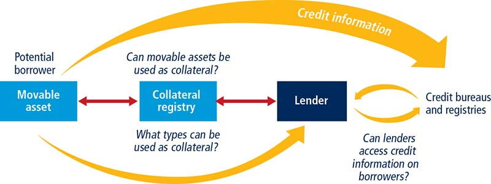
FIGURE 12.10 Getting credit: collateral rules and credit information
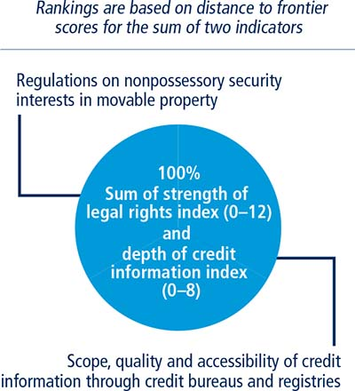
Note: Credit bureau coverage and credit registry coverage are measured but do not count for the rankings.
The data on the legal rights of borrowers and lenders are gathered through a questionnaire administered to financial lawyers and verified through analysis of laws and regulations as well as public sources of information on collateral and bankruptcy laws. Questionnaire responses are verified through several rounds of follow-up communication with respondents as well as by contacting third parties and consulting public sources. The questionnaire data are confirmed through teleconference calls or on-site visits in all economies.
The strength of legal rights index measures the degree to which collateral and bankruptcy laws protect the rights of borrowers and lenders and thus facilitate lending (table 12.10). For each economy it is first determined whether a unitary secured transactions system exists. Then two case scenarios, case A and case B, are used to determine how a nonpossessory security interest is created, publicized and enforced according to the law. Special emphasis is given to how the collateral registry operates (if registration of security interests is possible). The case scenarios involve a secured borrower, company ABC, and a secured lender, BizBank.
TABLE 12.10 What do the getting credit indicators measure?
Strength of legal rights index (0–12) |
Protection of rights of borrowers and lenders through collateral laws |
Protection of secured creditors’ rights through bankruptcy laws |
Depth of credit information index (0–8) |
Scope and accessibility of credit information distributed by credit bureaus and credit registries |
Credit bureau coverage (% of adults) |
Number of individuals and firms listed in the largest credit bureau as percentage of adult population |
Credit registry coverage (% of adults) |
Number of individuals and firms listed in a credit registry as percentage of adult population |
In some economies the legal framework for secured transactions will allow only case A or case B (not both) to apply. Both cases examine the same set of legal provisions relating to the use of movable collateral.
Several assumptions about the secured borrower (ABC) and lender (BizBank) are used:
▪ ABC is a domestic limited liability company (or its legal equivalent).
▪ ABC has up to 50 employees.
▪ ABC has its headquarters and only base of operations in the economy’s largest business city. For 11 economies the data are also collected for the second largest business city (table 12A.1).
▪ Both ABC and BizBank are 100% domestically owned.
The case scenarios also involve assumptions. In case A, as collateral for the loan, ABC grants BizBank a nonpossessory security interest in one category of movable assets, for example, its machinery or its inventory. ABC wants to keep both possession and ownership of the collateral. In economies where the law does not allow nonpossessory security interests in movable property, ABC and BizBank use a fiduciary transfer-of-title arrangement (or a similar substitute for nonpossessory security interests).
In case B, ABC grants BizBank a business charge, enterprise charge, floating charge or any charge that gives BizBank a security interest over ABC’s combined movable assets (or as much of ABC’s movable assets as possible). ABC keeps ownership and possession of the assets.
The strength of legal rights index covers functional equivalents to security interests in movable assets (such as financial leases and sales with retention of title) only in its first component, to assess how integrated or unified the economy’s legal framework for secured transactions is.
The strength of legal rights index includes 10 aspects related to legal rights in collateral law and 2 aspects in bankruptcy law. A score of 1 is assigned for each of the following features of the laws:
▪ The economy has an integrated or unified legal framework for secured transactions that extends to the creation, publicity and enforcement of four functional equivalents to security interests in movable assets: fiduciary transfers of title; financial leases; assignments or transfers of receivables; and sales with retention of title.
▪ The law allows a business to grant a nonpossessory security right in a single category of movable assets (such as machinery or inventory), without requiring a specific description of the collateral.
▪ The law allows a business to grant a nonpossessory security right in substantially all its movable assets, without requiring a specific description of the collateral.
▪ A security right can be given over future or after-acquired assets and extends automatically to the products, proceeds or replacements of the original assets.
▪ A general description of debts and obligations is permitted in the collateral agreement and in registration documents, all types of debts and obligations can be secured between the parties, and the collateral agreement can include a maximum amount for which the assets are encumbered.
▪ A collateral registry or registration institution for security interests granted over movable property by incorporated and nonincorporated entities is in operation, unified geographically and with an electronic database indexed by debtors’ names.
▪ The collateral registry is a notice-based registry—a registry that files only a notice of the existence of a security interest (not the underlying documents) and does not perform a legal review of the transaction. The registry also publicizes functional equivalents to security interests.
▪ The collateral registry has modern features such as those that allow secured creditors (or their representatives) to register, search, amend or cancel security interests online.
▪ Secured creditors are paid first (for example, before tax claims and employee claims) when a debtor defaults outside an insolvency procedure.
▪ Secured creditors are paid first (for example, before tax claims and employee claims) when a business is liquidated.
▪ Secured creditors are subject to an automatic stay on enforcement procedures when a debtor enters a court-supervised reorganization procedure, but the law protects secured creditors’ rights by providing clear grounds for relief from the automatic stay (for example, if the movable property is in danger) or setting a time limit for it.
▪ The law allows parties to agree in the collateral agreement that the lender may enforce its security right out of court; the law allows public and private auctions and also permits the secured creditor to take the asset in satisfaction of the debt.
The index ranges from 0 to 12, with higher scores indicating that collateral and bankruptcy laws are better designed to expand access to credit.
The strength of legal rights index tracks changes related to secured transactions and insolvency every year. Depending on the impact on the data, certain changes are classified as reforms and listed in the summaries of Doing Business reforms in 2015/2016 section of the report in order to acknowledge the implementation of significant changes. Reforms are divided in two types: those that make it easier to do business and those changes that make it more difficult to do business. The strength of legal rights index uses the following criteria to recognize a reform.
All changes in laws and regulations that have any impact on the economy’s score on the existence of a secured transaction legal framework which regulates the creation, publicity and enforcement of nonpossessory security interests and their functional equivalents. Each year, new laws and amendments are evaluated to see if they facilitate obtaining credit by small and medium enterprises, allowing for maximum flexibility in the choice of assets which can be used as collateral. Guidelines, model rules, principles, recommendations and case law are excluded.
Reforms impacting the strength of legal rights index include amendments to or the introduction of a secured transactions act, insolvency code, or civil code as well as the establishment or modernization of any of the features of a collateral registry as measured by the indicators. For example, introducing a law which provides for a collateral registry and actually establishing that collateral registry—which is geographically centralized, unified for all types of movable assets and for both incorporated and non-incorporated entities searchable by debtor’s name—would represent a reform with a 1-point increase and would therefore be acknowledged in the report.
The data on the reporting of credit information are built in two stages. First, banking supervision authorities and public information sources are surveyed to confirm the presence of a credit reporting service provider, such as a credit bureau or credit registry. Second, when applicable, a detailed questionnaire on the credit bureau’s or credit registry’s structure, laws and associated rules is administered to the entity itself. Questionnaire responses are verified through several rounds of follow-up communication with respondents as well as by contacting third parties and consulting public sources. The questionnaire data are confirmed through teleconference calls or on-site visits in all economies.
The depth of credit information index measures rules and practices affecting the coverage, scope and accessibility of credit information available through either a credit bureau or a credit registry. A score of 1 is assigned for each of the following eight features of the credit bureau or credit registry (or both):
▪ Data on firms and individuals are distributed.
▪ Both positive credit information (for example, original loan amounts, outstanding loan amounts and a pattern of on-time repayments) and negative information (for example, late payments and the number and amount of defaults) are distributed.
▪ Data from retailers or utility companies are distributed in addition to data from financial institutions.
▪ At least two years of historical data are distributed. Credit bureaus and registries that erase data on defaults as soon as they are repaid or distribute negative information more than 10 years after defaults are repaid receive a score of 0 for this component.
▪ Data on loan amounts below 1% of income per capita are distributed.
▪ By law, borrowers have the right to access their data in the largest credit bureau or registry in the economy. Credit bureaus and registries that charge more than 1% of income per capita for borrowers to inspect their data receive a score of 0 for this component.
▪ Banks and other financial institutions have online access to the credit information (for example, through a web interface, a system-to-system connection or both).
▪ Bureau or registry credit scores are offered as a value added service to help banks and other financial institutions assess the creditworthiness of borrowers.
The index ranges from 0 to 8, with higher values indicating the availability of more credit information, from either a credit bureau or a credit registry, to facilitate lending decisions. If the credit bureau or registry is not operational or covers less than 5% of the adult population, the score on the depth of credit information index is 0.
In Lithuania, for example, both a credit bureau and a credit registry operate. Both distribute data on firms and individuals (a score of 1). Both distribute positive and negative information (a score of 1). Although the credit registry does not distribute data from retailers or utilities, the credit bureau does (a score of 1). Both distribute at least two years of historical data (a score of 1). Although the credit registry has a threshold of €290, the credit bureau distributes data on loans of any value (a score of 1). Borrowers have the right to access their data in both the credit bureau and the credit registry free of charge once a year (a score of 1). Both entities provide data users access to databases through a web interface (a score of 1). Although the credit registry does not provide credit scores, the credit bureau does (a score of 1). Adding these numbers gives Lithuania a score of 8 on the depth of credit information index.
Credit bureau coverage reports the number of individuals and firms listed in a credit bureau’s database as of January 1, 2016, with information on their borrowing history within the past five years, plus the number of individuals and firms that have had no borrowing history in the past five years but for which a lender requested a credit report from the bureau in the period between January 2, 2015, and January 1, 2016. The number is expressed as a percentage of the adult population (the population age 15 and above in 2015 according to the World Bank’s World Development Indicators). A credit bureau is defined as a private firm or nonprofit organization that maintains a database on the creditworthiness of borrowers (individuals or firms) in the financial system and facilitates the exchange of credit information among creditors. (Many credit bureaus support banking and overall financial supervision activities in practice, though this is not their primary objective.) Credit investigative bureaus that do not directly facilitate information exchange among banks and other financial institutions are not considered. If no credit bureau operates, the coverage value is 0.0%.
Credit registry coverage reports the number of individuals and firms listed in a credit registry’s database as of January 1, 2016, with information on their borrowing history within the past five years, plus the number of individuals and firms that have had no borrowing history in the past five years but for which a lender requested a credit report from the registry in the period between January 2, 2015, and January 1, 2016. The number is expressed as a percentage of the adult population (the population age 15 and above in 2015 according to the World Bank’s World Development Indicators). A credit registry is defined as a database managed by the public sector, usually by the central bank or the superintendent of banks, that collects information on the creditworthiness of borrowers (individuals or firms) in the financial system and facilitates the exchange of credit information among banks and other regulated financial institutions (while their primary objective is to assist banking supervision). If no credit registry operates, the coverage value is 0.0%.
The depth of credit information index tracks changes related to the coverage, scope and accessibility of credit information available through either a credit bureau or a credit registry every year. Depending on the impact on the data, certain changes are classified as reforms and listed in the summaries of Doing Business reforms in 2015/2016 section of the report in order to acknowledge the implementation of significant changes. Reforms are divided into two types: those that make it easier to do business and those changes that make it more difficult to do business. The credit information index uses three criteria to recognize a reform.
First, all changes in laws, regulations and practices that have any impact on the economy’s score on the credit information index are classified as reforms. Examples of reforms impacting the index include measures to distribute positive credit data in addition to negative data, the distribution of credit data from utilities or retailers or the introduction of credit scores as a value-added service. Any change that improves the score of a given economy in any of the eight features of the index is considered a reform. Some reforms can have an impact in more than one feature. For example the introduction of a new credit bureau covering more than 5% of the adult population that distributes information on firms and individuals, as well as positive and negative data and provides online access to data users, represents a 3 point increase in the index. In contrast, the introduction of legislation that guarantees borrowers’ rights to access their data in the largest credit bureau or registry in the economy represents a reform with a 1 point increase in the index.
Second, changes that increase the coverage of the largest credit bureau or registry in an economy above 5% of the adult population may also be classified as reforms. According to the getting credit methodology, if the credit bureau or registry is not operational or covers less than 5% of the adult population, the score on the depth of credit information index is 0. The impact of the reform will depend on the characteristics of the economy’s credit reporting system as it relates to the eight features of the index. Expanded coverage that does not reach 5% of the adult population is not classified as a reform but the impact is still reflected on the most updated statistics.
Third, occasionally the credit information index will acknowledge legislative changes with no current impact on the data as reforms. This option is typically reserved to legislative changes of exceptional magnitude, such as the introduction of laws allowing the operation of credit bureaus or laws on personal data protection.
The data details on getting credit can be found for each economy at http://www.doingbusiness.org. The initial methodology was developed by Djankov, McLiesh and Shleifer (2007) and is adopted here with minor changes.
Doing Business measures the protection of minority investors from conflicts of interest through one set of indicators and shareholders’ rights in corporate governance through another (table 12.11). The data come from a questionnaire administered to corporate and securities lawyers and are based on securities regulations, company laws, civil procedure codes and court rules of evidence. The ranking of economies on the strength of minority investor protections is determined by sorting their distance to frontier scores for protecting minority investors. These scores are the simple average of the distance to frontier scores for the extent of conflict of interest regulation index and the extent of shareholder governance index (figure 12.11).
TABLE 12.11 What do the protecting minority investors indicators measure?
Extent of disclosure index (0–10) |
Extent of shareholder rights index (0–10) |
Review and approval requirements for related-party transactions |
Shareholders’ rights and role in major corporate decisions |
Internal, immediate and periodic disclosure requirements for related-party transactions |
|
Extent of director liability index (0–10) |
Extent of ownership and control index (0–10) |
Minority shareholders’ ability to sue and hold interested directors liable for prejudicial related-party transactions |
Governance safeguards protecting shareholders from undue board control and entrenchment |
Available legal remedies (damages, disgorgement of profits, fines, imprisonment, rescission of transactions) |
|
Ease of shareholder suits index (0–10) |
Extent of corporate transparency index (0–10) |
Access to internal corporate documents |
Corporate transparency on significant owners, executive compensation, annual meetings and audits |
Evidence obtainable during trial |
|
Allocation of legal expenses |
|
Extent of conflict of interest regulation index (0–10) |
Extent of shareholder governance index (0–10) |
Simple average of the extent of disclosure, extent of director liability and ease of shareholder suits indices |
Simple average of the extent of shareholder rights, extent of ownership and control and extent of corporate transparency indices |
Strength of minority investor protection index (0–10) |
|
Simple average of the extent of conflict of interest regulation and extent of shareholder governance indices |
|
FIGURE 12.11 Protecting minority investors: shareholders’ rights in conflicts of interest and corporate governance
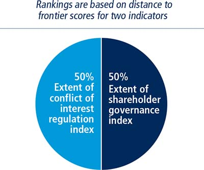
The extent of conflict of interest regulation index measures the protection of shareholders against directors’ misuse of corporate assets for personal gain by distinguishing three dimensions of regulation that address conflicts of interest: transparency of related-party transactions (extent of disclosure index), shareholders’ ability to sue and hold directors liable for self-dealing (extent of director liability index) and access to evidence and allocation of legal expenses in shareholder litigation (ease of shareholder suits index). To make the data comparable across economies, several assumptions about the business and the transaction are used (figure 12.12).
FIGURE 12.12 How well are minority shareholders protected from conflicts of interest?
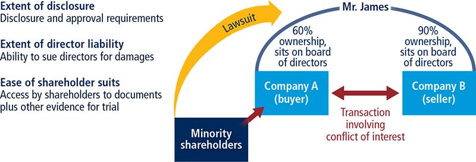
The business (Buyer):
▪ Is a publicly traded corporation listed on the economy’s most important stock exchange. If the number of publicly traded companies listed on that exchange is less than 10, or if there is no stock exchange in the economy, it is assumed that Buyer is a large private company with multiple shareholders.
▪ Has a board of directors and a chief executive officer (CEO) who may legally act on behalf of Buyer where permitted, even if this is not specifically required by law.
▪ Has a supervisory board (applicable to economies with a two-tier board system) on which 60% of the shareholder-elected members have been appointed by Mr. James, who is Buyer’s controlling shareholder and a member of Buyer’s board of directors.
▪ Has not adopted any bylaws or articles of association that differ from default minimum standards and does not follow any nonmandatory codes, principles, recommendations or guidelines relating to corporate governance.
▪ Is a manufacturing company with its own distribution network.
▪ Mr. James owns 60% of Buyer and elected two directors to Buyer’s five-member board.
▪ Mr. James also owns 90% of Seller, a company that operates a chain of retail hardware stores. Seller recently closed a large number of its stores.
▪ Mr. James proposes that Buyer purchase Seller’s unused fleet of trucks to expand Buyer’s distribution of its food products, a proposal to which Buyer agrees. The price is equal to 10% of Buyer’s assets and is higher than the market value.
▪ The proposed transaction is part of the company’s ordinary course of business and is not outside the authority of the company.
▪ Buyer enters into the transaction. All required approvals are obtained, and all required disclosures made (that is, the transaction is not fraudulent).
▪ The transaction causes damages to Buyer. Shareholders sue Mr. James and the other parties that approved the transaction.
The extent of disclosure index has five components:
▪ Which corporate body can provide legally sufficient approval for the transaction. A score of 0 is assigned if it is the CEO or the managing director alone; 1 if the board of directors, the supervisory board or shareholders must vote and Mr. James is permitted to vote; 2 if the board of directors or the supervisory board must vote and Mr. James is not permitted to vote; 3 if shareholders must vote and Mr. James is not permitted to vote.
▪ Whether it is required that an external body, for example, an external auditor, review the transaction before it takes place. A score of 0 is assigned if no; 1 if yes.
▪ Whether disclosure by Mr. James to the board of directors or the supervisory board is required.5 A score of 0 is assigned if no disclosure is required; 1 if a general disclosure of the existence of a conflict of interest is required without any specifics; 2 if full disclosure of all material facts relating to Mr. James’s interest in the Buyer-Seller transaction is required.
▪ Whether immediate disclosure of the transaction to the public, the regulator or the shareholders is required. A score of 0 is assigned if no disclosure is required; 1 if disclosure on the terms of the transaction is required but not on Mr. James’s conflict of interest; 2 if disclosure on both the terms and Mr. James’s conflict of interest is required.
▪ Whether disclosure in the annual report is required. A score of 0 is assigned if no disclosure on the transaction is required; 1 if disclosure on the terms of the transaction is required but not on Mr. James’s conflict of interest; 2 if disclosure on both the terms and Mr. James’s conflict of interest is required.
The index ranges from 0 to 10, with higher values indicating greater disclosure. In Poland, for example, the board of directors must approve the transaction and Mr. James is not allowed to vote (a score of 2). Poland does not require an external body to review the transaction (a score of 0). Before the transaction Mr. James must disclose his conflict of interest to the other directors, but he is not required to provide specific information about it (a score of 1). Buyer is required to disclose immediately all information affecting the stock price, including the conflict of interest (a score of 2). In its annual report Buyer must also disclose the terms of the transaction and Mr. James’s ownership in Buyer and Seller (a score of 2). Adding these numbers gives Poland a score of 7 on the extent of disclosure index.
The extent of director liability index has seven components: 6
▪ Whether shareholder plaintiffs are able to sue directly or derivatively for the damage the transaction causes to the company. A score of 0 is assigned if suits are unavailable or are available only for shareholders holding more than 10% of the company’s share capital; 1 if direct or derivative suits are available for shareholders holding 10% of share capital.
▪ Whether a shareholder plaintiff is able to hold Mr. James liable for the damage the Buyer-Seller transaction causes to the company. A score of 0 is assigned if Mr. James cannot be held liable or can be held liable only for fraud, bad faith or gross negligence; 1 if Mr. James can be held liable only if he influenced the approval of the transaction or was negligent; 2 if Mr. James can be held liable when the transaction is unfair or prejudicial to the other shareholders.
▪ Whether a shareholder plaintiff is able to hold the approving body (the CEO, members of the board of directors or members of the supervisory board) liable for the damage the transaction causes to the company. A score of 0 is assigned if the approving body cannot be held liable or can be held liable only for fraud, bad faith or gross negligence; 1 if the approving body can be held liable for negligence; 2 if the approving body can be held liable when the transaction is unfair or prejudicial to the other shareholders.
▪ Whether Mr. James pays damages for the harm caused to the company upon a successful claim by the shareholder plaintiff. A score of 0 is assigned if no; 1 if yes.
▪ Whether Mr. James repays profits made from the transaction upon a successful claim by the shareholder plaintiff. A score of 0 is assigned if no; 1 if yes.
▪ Whether Mr. James is fined and imprisoned or disqualified upon a successful claim by the shareholder plaintiff. A score of 0 is assigned if no; 1 if he is fined and imprisoned or if he is disqualified—that is, disallowed from representing or holding a managerial position in any company for a year or more.
▪ Whether a court can void the transaction upon a successful claim by a shareholder plaintiff. A score of 0 is assigned if rescission is unavailable or is available only in case of fraud, bad faith or gross negligence; 1 if rescission is available when the transaction is oppressive or prejudicial to the other shareholders; 2 if rescission is available when the transaction is unfair or entails a conflict of interest.
The index ranges from 0 to 10, with higher values indicating greater liability of directors. In Panama, for example, direct or derivative suits are available for shareholders holding 10% of share capital (a score of 1). Assuming that the prejudicial transaction was duly approved and disclosed, in order to hold Mr. James liable a plaintiff must prove that Mr. James influenced the approving body or acted negligently (a score of 1). To hold the other directors liable, a plaintiff must prove that they acted negligently (a score of 1). If Mr. James is found liable, he must pay damages (a score of 1) but he is not required to disgorge his profits (a score of 0). Mr. James can be neither fined and imprisoned nor disqualified (a score of 0). The prejudicial transaction cannot be voided (a score of 0). Adding these numbers gives Panama a score of 4 on the extent of director liability index.
The ease of shareholder suits index has six components:
▪ Whether shareholders owning 10% of the company’s share capital have the right to inspect the transaction documents before filing suit or request that a government inspector investigate the Buyer-Seller transaction without filing suit. A score of 0 is assigned if no; 1 if yes.
▪ What range of documents is available to the shareholder plaintiff from the defendant and witnesses during trial. A score of 1 is assigned for each of the following types of documents available: information that the defendant has indicated he intends to rely on for his defense; information that directly proves specific facts in the plaintiff’s claim; and any information relevant to the subject matter of the claim.
▪ Whether the plaintiff can obtain categories of relevant documents from the defendant without identifying each document specifically. A score of 0 is assigned if no; 1 if yes.
▪ Whether the plaintiff can directly examine the defendant and witnesses during trial. A score of 0 is assigned if no; 1 if yes, with prior approval of the questions by the judge; 2 if yes, without prior approval.
▪ Whether the standard of proof for civil suits is lower than that for a criminal case. A score of 0 is assigned if no; 1 if yes.
▪ Whether shareholder plaintiffs can recover their legal expenses from the company. A score of 0 is assigned if no; 1 if plaintiffs can recover their legal expenses from the company only upon a successful outcome of their legal action or if payment of their attorney fees is contingent on a successful outcome; 2 if plaintiffs can recover their legal expenses from the company regardless of the outcome of their legal action.
The index ranges from 0 to 10, with higher values indicating greater powers of shareholders to challenge the transaction. In Croatia, for example, a shareholder holding 10% of Buyer’s shares can request that a government inspector review suspected mismanagement by Mr. James and the CEO without filing suit in court (a score of 1). The plaintiff can access documents that the defendant intends to rely on for his defense (a score of 1). The plaintiff must specifically identify the documents being sought (for example, the Buyer-Seller purchase agreement of July 15, 2015) and cannot simply request categories (for example, all documents related to the transaction) (a score of 0). The plaintiff can examine the defendant and witnesses during trial, without prior approval of the questions by the court (a score of 2). The standard of proof for civil suits is preponderance of the evidence, while the standard for a criminal case is beyond a reasonable doubt (a score of 1). The plaintiff can recover legal expenses from the company only upon a successful outcome of the legal action (a score of 1). Adding these numbers gives Croatia a score of 6 on the ease of shareholder suits index.
The extent of conflict of interest regulation index is the average of the extent of disclosure index, the extent of director liability index and the ease of shareholder suits index. The index ranges from 0 to 10, with higher values indicating stronger regulation of conflicts of interest.
The extent of shareholder governance index measures shareholders’ rights in corporate governance by distinguishing three dimensions of good governance: shareholders’ rights and role in major corporate decisions (extent of shareholder rights index), governance safeguards protecting shareholders from undue board control and entrenchment (extent of ownership and control index) and corporate transparency on ownership stakes, compensation, audits and financial prospects (extent of corporate transparency index). The index also measures whether a subset of relevant rights and safeguards are available in limited companies.
For each component of the extent of shareholder rights index, a score of 0 is assigned if the answer is no; 1 if yes. The index has 10 components:
▪ Whether the sale of 51% of Buyer’s assets requires shareholder approval.
▪ Whether shareholders representing 10% of Buyer’s share capital have the right to call for an extraordinary meeting of shareholders.
▪ Whether Buyer must obtain its shareholders’ approval every time it issues new shares.
▪ Whether shareholders automatically receive preemption or subscription rights every time Buyer issues new shares.
▪ Whether the election and dismissal of the external auditor must be approved by the shareholders.
▪ Whether changes to rights associated with a class of shares are only possible if the holders of the affected shares approve those changes.
▪ Assuming that Buyer is a limited company, whether the sale of 51% of Buyer’s assets requires member approval.
▪ Assuming that Buyer is a limited company, whether members representing 10% have the right to call for a meeting of members.
▪ Assuming that Buyer is a limited company, whether all members must consent to add a new member.7
▪ Assuming that Buyer is a limited company, whether a member must first offer to sell his or her interest to the existing members before selling to a non-member.
For each component of the extent of ownership and control index, a score of 0 is assigned if the answer is no; 1 if yes. The index has 10 components:
▪ Whether the same individual cannot be appointed CEO and chair of the board of directors.
▪ Whether the board of directors must include independent and nonexecutive board members.
▪ Whether shareholder can remove members of the board of directors without cause before the end of their term.
▪ Whether the board of directors must include a separate audit committee.
▪ Whether a potential acquirer must make a tender offer to all shareholders upon acquiring 50% of Buyer.
▪ Whether Buyer must pay dividends within a maximum period set by law after the declaration date.
▪ Whether a subsidiary is prohibited from acquiring shares issued by its parent company.
▪ Assuming that Buyer is a limited company, whether there is a management deadlock breaking mechanism.8
▪ Assuming that Buyer is a limited company, whether a potential acquirer must make a tender offer to all members upon acquiring 50% of Buyer.
▪ Assuming that Buyer is a limited company, whether Buyer must distribute profits within a maximum period set by law after the declaration date.
For each component of the extent of corporate transparency index, a score of 0 is assigned if the answer is no; 1 if yes. The index has 10 components:
▪ Whether Buyer must disclose direct and indirect beneficial ownership stakes representing 5%.
▪ Whether Buyer must disclose information about board members’ other directorships as well as basic information on their primary employment.
▪ Whether Buyer must disclose the compensation of individual managers.
▪ Whether a detailed notice of general meeting must be sent 21 calendar days before the meeting.9
▪ Whether shareholders representing 5% of Buyer’s share capital can put items on the agenda for the general meeting.
▪ Whether Buyer’s annual financial statements must be audited by an external auditor.
▪ Whether Buyer must disclose its audit reports to the public.
▪ Assuming that Buyer is a limited company, whether members must meet at least once a year.10
▪ Assuming that Buyer is a limited company, whether members representing 5% can put items on the meeting agenda.
▪ Assuming that Buyer is a limited company larger than a threshold set by law, whether its annual financial statements must be audited by an external auditor.
The extent of shareholder governance index is the average of the extent of shareholder rights index, the extent of ownership and control index and the extent of corporate transparency index. The index ranges from 0 to 10, with higher values indicating stronger rights of shareholders in corporate governance.
The protecting minority investors indicator set captures changes related to the regulation of related-party transactions as well as corporate governance every year. Depending on the impact on the data, certain changes are listed in the summaries of Doing Business reforms in 2015/2016 section of the report in order to acknowledge the implementation of significant changes. They are divided into two types: reforms that make it easier to do business and changes that make it more difficult to do business. The protecting minority investors indicator set uses the following criteria to recognize a reform:
All legislative and regulatory changes that impact the score assigned to a given economy on any of the 48 questions comprising the six indicators on minority investor protection are classified as a reform. The change must be mandatory, meaning that failure to comply allows shareholders to sue in court or for sanctions to be leveled by a regulatory body such as the company registrar, the capital market authority or the securities and exchange commission. Guidelines, model rules, principles, recommendations and duties to explain in case of non-compliance are excluded. When a change exclusively affects companies that are listed on the stock exchange, it will be captured only if the stock exchange has 10 or more equity listings. If the economy has no stock exchange or a stock exchange with less than 10 equity listings, the change is taken into account only if it affects companies irrespective of whether their shares are listed or not.
Reforms impacting the protecting minority investors indicator set include amendments to or the introduction of a new companies act, commercial code, securities regulation, code of civil procedure, court rules, law, decree, order, supreme court decision, or stock exchange listing rule. The changes must affect the rights and duties of issuers, company managers, directors and shareholders in connection with related-party transactions or, more generally, the aspects of corporate governance measured by the indicators. For example in a given economy, related-party transactions have to be approved by the board of directors including board members who have a personal financial interest in seeing the transaction succeed. This economy introduces a law requiring that related-party transactions be approved instead by a general meeting of shareholders and that excludes shareholders with conflicting interests from participating in the vote. This law would result in a 2-point increase on the corresponding question in the extent of disclosure index and would therefore be acknowledged in the report.
The data details on protecting minority investors can be found for each economy at http://www.doingbusiness.org. The initial methodology was developed by Djankov, La Porta and others (2008).
Doing Business records the taxes and mandatory contributions that a medium-size company must pay in a given year as well as measures of the administrative burden of paying taxes and contributions and complying with postfiling procedures (figure 12.13). The project was developed and implemented in cooperation with PwC.11 Taxes and contributions measured include the profit or corporate income tax, social contributions and labor taxes paid by the employer, property taxes, property transfer taxes, dividend tax, capital gains tax, financial transactions tax, waste collection taxes, vehicle and road taxes, and any other small taxes or fees.
FIGURE 12.13 What are the time, total tax rate and number of payments necessary for a local medium-size company to pay all taxes and how efficient is it for a local medium-size company to comply with postfiling processes?
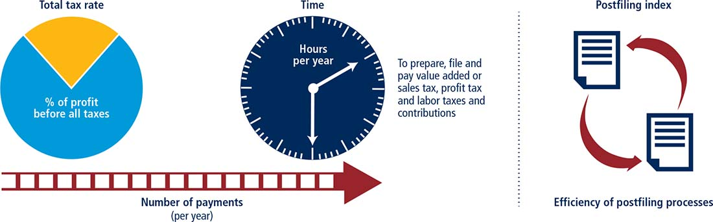
The ranking of economies on the ease of paying taxes is determined by sorting their distance to frontier scores for paying taxes. These scores are the simple average of the distance to frontier scores for each of the component indicators (figure 12.14), with a threshold and a nonlinear transformation applied to one of the component indicators, the total tax rate.12 The threshold is defined as the total tax rate at the 15th percentile of the overall distribution for all years included in the analysis up to and including Doing Business 2015, which is 26.1%. All economies with a total tax rate below this threshold receive the same score as the economy at the threshold.
FIGURE 12.14 Paying taxes: tax compliance for a local manufacturing company
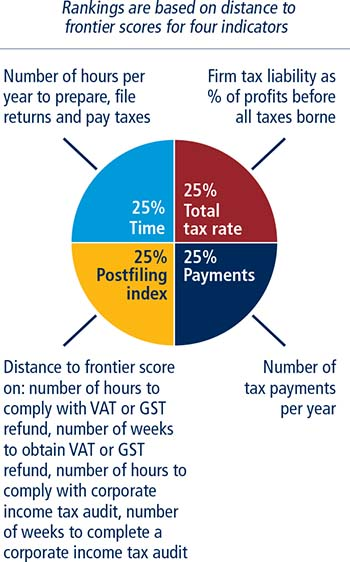
Note: All economies below the threshold receive the same score in the total tax rate component as the economies at the threshold. If both VAT (or GST) and corporate income tax apply, the postfiling index is the simple average of the distance to frontier scores for each of the four components: time to comply with VAT or GST refund, time to obtain VAT or GST refund, time to comply with corporate income tax audit and time to complete a corporate income tax audit. If only VAT (or GST) or corporate income tax applies, the postfiling index is the simple average of the scores for only the two components pertaining to the applicable tax. If neither VAT (or GST) nor corporate income tax applies, the postfiling index is not included in the ranking of the ease of paying taxes.
The threshold is not based on any economic theory of an “optimal tax rate” that minimizes distortions or maximizes efficiency in an economy’s overall tax system. Instead, it is mainly empirical in nature, set at the lower end of the distribution of tax rates levied on medium-size enterprises in the manufacturing sector as observed through the paying taxes indicators. This reduces the bias in the total tax rate indicator toward economies that do not need to levy significant taxes on companies like the Doing Business standardized case study company because they raise public revenue in other ways—for example, through taxes on foreign companies, through taxes on sectors other than manufacturing or from natural resources (all of which are outside the scope of the methodology).
Doing Business measures all taxes and contributions that are government mandated (at any level—federal, state or local) and that apply to the standardized business and have an impact in its financial statements. In doing so, Doing Business goes beyond the traditional definition of a tax. As defined for the purposes of government national accounts, taxes include only compulsory, unrequited payments to general government. Doing Business departs from this definition because it measures imposed charges that affect business accounts, not government accounts. One main difference relates to labor contributions. The Doing Business measure includes government-mandated contributions paid by the employer to a requited private pension fund or workers’ insurance fund. It includes, for example, Australia’s compulsory superannuation guarantee and workers’ compensation insurance. For the purpose of calculating the total tax rate (defined below), only taxes borne are included. For example, value added taxes (VAT) are generally excluded (provided that they are not irrecoverable) because they do not affect the accounting profits of the business—that is, they are not reflected in the income statement. They are, however, included for the purpose of the compliance measures (time and payments), as they add to the burden of complying with the tax system.
Doing Business uses a case scenario to measure the taxes and contributions paid by a standardized business and the complexity of an economy’s tax compliance system. This case scenario uses a set of financial statements and assumptions about transactions made over the course of the year. In each economy tax experts from a number of different firms (in many economies these include PwC) compute the taxes and mandatory contributions due in their jurisdiction based on the standardized case study facts. Information is also compiled on the frequency of filing and payments, the time taken to comply with tax laws in an economy, the time taken to request and process a VAT refund claim and the time taken to comply with and complete a corporate income tax audit. To make the data comparable across economies, several assumptions about the business and the taxes and contributions are used.
The business:
▪ Is a limited liability, taxable company. If there is more than one type of limited liability company in the economy, the limited liability form most common among domestic firms is chosen. The most common form is reported by incorporation lawyers or the statistical office.
▪ Started operations on January 1, 2014. At that time the company purchased all the assets shown in its balance sheet and hired all its workers.
▪ Operates in the economy’s largest business city. For 11 economies the data are also collected for the second largest business city (table 12A.1).
▪ Is 100% domestically owned and has five owners, all of whom are natural persons.
▪ At the end of 2014, has a start-up capital of 102 times income per capita.
▪ Performs general industrial or commercial activities. Specifically, it produces ceramic flowerpots and sells them at retail. It does not participate in foreign trade (no import or export) and does not handle products subject to a special tax regime, for example, liquor or tobacco.
▪ At the beginning of 2015, owns two plots of land, one building, machinery, office equipment, computers and one truck and leases one truck.
▪ Does not qualify for investment incentives or any benefits apart from those related to the age or size of the company.
▪ Has 60 employees—4 managers, 8 assistants and 48 workers. All are nationals, and one manager is also an owner. The company pays for additional medical insurance for employees (not mandated by any law) as an additional benefit. In addition, in some economies reimbursable business travel and client entertainment expenses are considered fringe benefits. When applicable, it is assumed that the company pays the fringe benefit tax on this expense or that the benefit becomes taxable income for the employee. The case study assumes no additional salary additions for meals, transportation, education or others. Therefore, even when such benefits are frequent, they are not added to or removed from the taxable gross salaries to arrive at the labor tax or contribution calculation.
▪ Has a turnover of 1,050 times income per capita.
▪ Makes a loss in the first year of operation.
▪ Has a gross margin (pretax) of 20% (that is, sales are 120% of the cost of goods sold).
▪ Distributes 50% of its net profits as dividends to the owners at the end of the second year.
▪ Sells one of its plots of land at a profit at the beginning of the second year.
▪ Is subject to a series of detailed assumptions on expenses and transactions to further standardize the case. For example, the owner who is also a manager spends 10% of income per capita on traveling for the company (20% of this owner’s expenses are purely private, 20% are for entertaining customers, and 60% are for business travel). All financial statement variables are proportional to 2012 income per capita (this is an update from Doing Business 2013 and previous years’ reports, where the variables were proportional to 2005 income per capita). For some economies a multiple of two or three times income per capita has been used to estimate the financial statement variables.13 The 2012 income per capita was not sufficient to bring the salaries of all the case study employees up to the minimum wage thresholds that exist in these economies.
▪ All the taxes and contributions recorded are those paid in the second year of operation (calendar year 2015). A tax or contribution is considered distinct if it has a different name or is collected by a different agency. Taxes and contributions with the same name and agency, but charged at different rates depending on the business, are counted as the same tax or contribution.
▪ The number of times the company pays taxes and contributions in a year is the number of different taxes or contributions multiplied by the frequency of payment (or withholding) for each tax. The frequency of payment includes advance payments (or withholding) as well as regular payments (or withholding).
The tax payments indicator reflects the total number of taxes and contributions paid, the method of payment, the frequency of payment, the frequency of filing and the number of agencies involved for the standardized case study company during the second year of operation (table 12.12). It includes taxes withheld by the company, such as sales tax, VAT and employee-borne labor taxes. These taxes are traditionally collected by the company from the consumer or employee on behalf of the tax agencies. Although they do not affect the income statements of the company, they add to the administrative burden of complying with the tax system and so are included in the tax payments measure.
TABLE 12.12 What do the paying taxes indicators measure?
Tax payments for a manufacturing company in 2015 (number per year adjusted for electronic and joint filing and payment) |
Total number of taxes and contributions paid, including consumption taxes (value added tax, sales tax or goods and service tax) |
Method and frequency of filing and payment |
Time required to comply with three major taxes (hours per year) |
Collecting information and computing the tax payable |
Completing tax return forms, filing with proper agencies |
Arranging payment or withholding |
Preparing separate mandatory tax accounting books, if required |
Total tax rate (% of profit before all taxes) |
Profit or corporate income tax |
Social contributions and labor taxes paid by the employer |
Property and property transfer taxes |
Dividend, capital gains and financial transactions taxes |
Waste collection, vehicle, road and other taxes |
Postfiling index |
Compliance time of a VAT or GST refund process |
Time to receive a VAT or GST refund |
Compliance time of correcting an error in the corporate income tax return including compliance with an audit process if applicable |
Time to complete a corporate income tax audit |
The number of payments takes into account electronic filing. Where full electronic filing and payment is allowed and it is used by the majority of medium-size businesses, the tax is counted as paid once a year even if filings and payments are more frequent. For payments made through third parties, such as tax on interest paid by a financial institution or fuel tax paid by a fuel distributor, only one payment is included even if payments are more frequent.
Where two or more taxes or contributions are filed for and paid jointly using the same form, each of these joint payments is counted once. For example, if mandatory health insurance contributions and mandatory pension contributions are filed for and paid together, only one of these contributions would be included in the number of payments.
Time is recorded in hours per year. The indicator measures the time taken to prepare, file and pay three major types of taxes and contributions: the corporate income tax, value added or sales tax, and labor taxes, including payroll taxes and social contributions. Preparation time includes the time to collect all information necessary to compute the tax payable and to calculate the amount payable. If separate accounting books must be kept for tax purposes—or separate calculations made—the time associated with these processes is included. This extra time is included only if the regular accounting work is not enough to fulfill the tax accounting requirements. Filing time includes the time to complete all necessary tax return forms and file the relevant returns at the tax authority. Payment time considers the hours needed to make the payment online or in person. Where taxes and contributions are paid in person, the time includes delays while waiting.
The total tax rate measures the amount of taxes and mandatory contributions borne by the business in the second year of operation, expressed as a share of commercial profit. Doing Business 2017 reports the total tax rate for calendar year 2015. The total amount of taxes borne is the sum of all the different taxes and contributions payable after accounting for allowable deductions and exemptions. The taxes withheld (such as personal income tax) or collected by the company and remitted to the tax authorities (such as VAT, sales tax or goods and service tax) but not borne by the company are excluded. The taxes included can be divided into five categories: profit or corporate income tax, social contributions and labor taxes paid by the employer (for which all mandatory contributions are included, even if paid to a private entity such as a requited pension fund), property taxes, turnover taxes and other taxes (such as municipal fees and vehicle taxes). Fuel taxes are no longer included in the total tax rate because of the difficulty of computing these taxes in a consistent way for all economies covered. The fuel tax amounts are in most cases very small, and measuring these amounts is often complicated because they depend on fuel consumption. Fuel taxes continue to be counted in the number of payments.
The total tax rate is designed to provide a comprehensive measure of the cost of all the taxes a business bears. It differs from the statutory tax rate, which merely provides the factor to be applied to the tax base. In computing the total tax rate, the actual tax payable is divided by commercial profit. Data for Iraq are provided as an example (table 12.13).
TABLE 12.13 Computing the total tax rate for Iraq
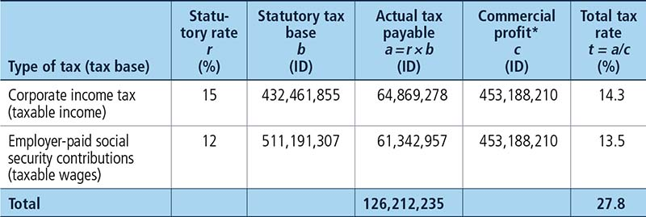
Source: Doing Business database.
Note: Commercial profit is assumed to be 59.4 times income per capita. ID is Iraqi dinar.
* Profit before all taxes borne.
Commercial profit is essentially net profit before all taxes borne. It differs from the conventional profit before tax, reported in financial statements. In computing profit before tax, many of the taxes borne by a firm are deductible. In computing commercial profit, these taxes are not deductible. Commercial profit therefore presents a clear picture of the actual profit of a business before any of the taxes it bears in the course of the fiscal year.
Commercial profit is computed as sales minus cost of goods sold, minus gross salaries, minus administrative expenses, minus other expenses, minus provisions, plus capital gains (from the property sale) minus interest expense, plus interest income and minus commercial depreciation. To compute the commercial depreciation, a straight-line depreciation method is applied, with the following rates: 0% for the land, 5% for the building, 10% for the machinery, 33% for the computers, 20% for the office equipment, 20% for the truck and 10% for business development expenses. Commercial profit amounts to 59.4 times income per capita.
The methodology for calculating the total tax rate is broadly consistent with the Total Tax Contribution framework developed by PwC and the calculation within this framework for taxes borne. But while the work undertaken by PwC is usually based on data received from the largest companies in the economy, Doing Business focuses on a case study for a standardized medium-size company.
The postfiling index is based on four components—time to comply with VAT or GST refund, time to obtain VAT or GST refund, time to comply with corporate income tax audit and time to complete a corporate income tax audit. If both VAT (or GST) and corporate income tax apply, the postfiling index is the simple average of the distance to frontier scores for each of the four components. If only VAT (or GST) or corporate income tax applies, the postfiling index is the simple average of the scores for only the two components pertaining to the applicable tax. If neither VAT (or GST) nor corporate income tax applies, the postfiling index is not included in the ranking of the ease of paying taxes.
The indicators are based on expanded case study assumptions.
▪ In June 2015, TaxpayerCo. makes a large capital purchase: one additional machine for manufacturing pots.
▪ The value of the machine is 65 times income per capita of the economy.
▪ Sales are equally spread per month (that is, 1,050 times income per capita divided by 12).
▪ Cost of goods sold are equally expensed per month (that is, 875 times income per capita divided by 12).
▪ The seller of the machinery is registered for VAT or general sales tax (GST).
▪ Excess input VAT incurred in June will be fully recovered after four consecutive months if the VAT or GST rate is the same for inputs, sales and the machine and the tax reporting period is every month.
▪ An error in the calculation of the income tax liability (for example, use of incorrect tax depreciation rates, or incorrectly treating an expense as tax deductible) leads to an incorrect income tax return and consequently an underpayment of corporate income tax.
▪ TaxpayerCo. discovered the error and voluntarily notified the tax authority of the error in the corporate income tax return.
▪ The value of the underpaid income tax liability is 5% of the corporate income tax liability due.
▪ TaxpayerCo. submits the corrected information after the deadline for submitting the annual tax return, but within the tax assessment period.
Time is recorded in hours. The indicator has two parts:
▪ The process of claiming a VAT or GST refund. Time includes: time spent by TaxpayerCo. on gathering VAT information from internal sources, including time spent on any additional analysis of accounting information and calculating the VAT refund amount; time spent by TaxpayerCo. on preparing the VAT refund claim; time spent by TaxpayerCo. preparing any additional documents that are needed to substantiate the claim for the VAT refund; time spent making representation at the tax office if required and time spent by TaxpayerCo. completing any other mandatory activities or tasks associated with the VAT or GST refund. Input VAT will exceed Output VAT in June 2015 (table 12.14).
TABLE 12.14 Computing the value of the VAT/GST input tax credit for Albania
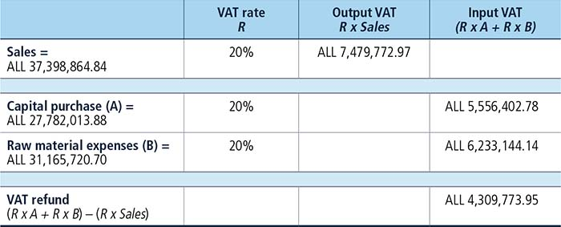
Source: Doing Business database.
▪ The process of an audit if the case scenario is likely to trigger an audit. Time includes: time spent by TaxpayerCo. on gathering information and preparing any documentation (information such as receipts, financial statements, pay stubs) as required by the tax auditor; time spent by TaxpayerCo. in submitting the documents requested by the auditor.
A total estimate of zero hours is recorded if the process of claiming a VAT or GST refund is done automatically within the standard VAT or GST return without the need to complete any additional section or part of the return, no additional documents or tasks are required as a result of the input tax credit and the case scenario is unlikely to trigger an audit. It is assumed that in cases where taxpayers are required to submit a specific form for a VAT refund request and additional documents these are submitted at the same time as the VAT return.
An estimate of half an hour is recorded for submission of documents requested during an audit in the case of an audit taking place if the submission is done electronically and takes a matter of minutes. An estimate of zero hours is recorded in the case of a field audit if documents are submitted in person and at the taxpayer’s premises.
In Kosovo, for example, taxpayers spend 30 hours complying with the process of claiming a VAT refund. Taxpayers must submit a special form for a VAT refund request in addition to the standard VAT return. Taxpayers spend two hours gathering information from internal sources and accounting records and 1 hour to prepare the form. Taxpayers must also prepare and have available for review all purchase and sales invoices for the past three months, a business explanation of VAT overpayment for large purchases or investments, bank statements, any missing tax declaration and a copy of fiscal and VAT certificates. Taxpayers spend four hours preparing these additional documents. Taxpayers must also appear in person at the tax office to explain the VAT refund claim and the reasons for the excess input VAT in the month of June. This takes three hours. Additionally, the claim for a VAT refund would trigger a full audit at the taxpayer’s premises. Taxpayers spend 20 hours preparing the documents requested by the auditor including purchase and sales invoices, bills, bank transactions, records on accounting software, tax returns and contracts. Taxpayers submit the documents to the auditor in person at their premises (zero hours for submission).
Time is recorded in weeks. Time measures the total waiting time to receive a VAT or GST refund from the moment the request has been submitted. If the case scenario is likely to trigger an audit, time includes time spent by TaxpayerCo. interacting with the auditor from the moment an audit begins until there are no further interactions between TaxpayerCo. and the auditor (including the various rounds of interactions between TaxpayerCo. and the auditor) and the time spent waiting for the tax auditor to issue the final tax assessment from the moment TaxpayerCo. has submitted all relevant information and documents and there are no further interactions between TaxpayerCo. and the auditor.
Time includes an average waiting time to submit the refund claim. The average waiting time to submit the refund claim is half a month if the VAT or GST refund claim is filed monthly. The average waiting time to submit the refund claim is one month if the VAT or GST refund claim is filed bimonthly. The average waiting time to submit the refund claim is one and a half months if the VAT or GST refund claim is filed quarterly. The average waiting time to submit the refund claim is three months if the VAT or GST refund claim is filed semi-annually. The average waiting time to submit the refund claim is six months if the VAT or GST refund claim is filed annually.
Time includes the mandatory carry forward time before a VAT refund in cash can be paid. The carry forward time is zero if there is no mandatory carry forward period.
In Albania, for example, it takes 27.7 weeks to receive a VAT refund. The request for a VAT refund triggers an audit by the tax authorities. Taxpayers spend 8.6 weeks interacting with the auditor and wait four weeks until the final assessment is issued. Taxpayers only receive the VAT refund after the audit is completed. In Albania the taxpayers must carry forward the VAT refund for three consecutive VAT accounting periods (three months in the case of Albania) before a refund in cash is requested. The three months (13 weeks) carry forward period is included in the total time to receive a VAT refund. The VAT return is filed monthly and thus 0.5 month (2.1 weeks) is included in the total time to receive a VAT refund.
If an economy does not have a VAT or GST, the economy will not be scored on the two indicators for a VAT or GST refund process—time to comply with VAT refund and time to obtain VAT refund. This is the case in Bahrain. If an economy has a VAT or GST and the purchase of a machine is not subject to VAT, the economy will not be scored on time to comply with VAT refund and time to obtain VAT refund. This is the case in Sierra Leone. If an economy has a VAT or GST that was introduced in calendar year 2015 and there is not sufficient data to assess the refund process, the economy will not be scored on time to comply with VAT refund and time to obtain VAT refund. This is the case in Malaysia, which replaced sales tax with GST on April 1, 2015.
If an economy has a VAT or GST but the ability to claim a refund is restricted to specific categories of taxpayers that do not include the case study company, the economy is assigned a score of 0 on the distance to frontier score for time to comply with VAT refund and time to obtain VAT refund. In Bolivia, for example, only exporters are eligible to request a VAT refund. As a result, Bolivia receives a score of 0 on the distance to frontier score for time to comply with VAT refund and time to obtain VAT refund. If an economy has a VAT or GST and the case study company is eligible to claim a refund but cash refunds do not occur in practice, the economy is assigned a score of 0 on the distance to frontier score for time to comply with VAT refund and time to obtain VAT refund. This is the case in Central African Republic. If an economy has a VAT or GST but there is no refund mechanism in place, the economy is assigned a score of 0 on the distance to frontier score for time to comply with VAT refund and time to obtain VAT refund. This is the case in Grenada. If an economy has a VAT or GST but input tax on a capital purchase is a cost on the business, the economy is scored 0 on the distance to frontier score for time to comply with VAT refund and time to obtain VAT refund. This is the case in Myanmar. If an economy has a VAT or GST and legislation mandates that taxpayers carry forward the excess input tax for four months or more before a cash refund can be requested, the economy is scored 0 on the distance to frontier score for time to comply with VAT refund and time to obtain VAT refund. This is the case in Antigua and Barbuda.
Time is recorded in hours. The indicator has two parts:
▪ The process of notifying the tax authorities of the error, amending the return and making additional payment. Time includes: time spent by TaxpayerCo. gathering information and preparing the documents required to notify the tax authorities; time spent by TaxpayerCo. in submitting the documents; and time spent by TaxpayerCo. in making the additional tax payment.
▪ The process of an audit if the case scenario is likely to trigger an audit. Time includes: time spent by TaxpayerCo. on gathering information and preparing any documentation (information such as receipts, financial statements, pay stubs) as required by the tax auditor; and time spent by TaxpayerCo. in submitting the documents requested by the auditor.
An estimate of half an hour is recorded for submission of documents or payment of the income tax liability due if the submission or payment is done electronically and takes several minutes. An estimate of zero hours is recorded in the case of a field audit if documents are submitted in person and at the taxpayer’s premises.
In the Slovak Republic, for example, taxpayers would submit an amended corporate income tax return electronically. It takes taxpayers one hour to correct the error in the return, half an hour to submit the amended return online and half an hour to make the additional payment online. Amending a corporate income tax return per the case study scenario in the Slovak Republic would not trigger an audit. This brings the total compliance time to two hours.
Time is recorded in weeks. Time includes the time spent by TaxpayerCo. interacting with the auditor from the moment an audit begins until there are no further interactions between TaxpayerCo. and the auditor (including the various rounds of interactions between TaxpayerCo. and the auditor). Time also includes the time spent waiting for the tax auditor to issue the final tax assessment—from the moment TaxpayerCo. has submitted all relevant information and documents and there are no further interactions between TaxpayerCo. and the auditor.
Time to complete a corporate income tax audit is recorded as zero if the case study scenario is unlikely to trigger an audit.
In Switzerland, for example, taxpayers are subject to a single issue audit conducted at the taxpayer’s premises as a result of amending a corporate income tax return per the case study scenario. Taxpayers interact for a total of four days (0.6 weeks) with the auditor and wait for four weeks until the final assessment is issued by the auditor, resulting in a total of 4.6 weeks to complete a corporate income tax audit.
If an economy does not levy corporate income tax, the economy will not be scored on the two indicators: time to comply with corporate income tax audit and time to complete a corporate income tax audit. This is the case in Vanuatu.
The paying taxes indicator set tracks changes related to the different taxes and mandatory contributions that a medium-size company must pay in a given year, the administrative burden of paying taxes and contributions and the administrative burden of complying with two postfiling processes (VAT refund, and tax audit) per calendar year. Depending on the impact on the data, certain changes are classified as reforms and listed in the summaries of Doing Business reforms in 2015/2016 section of the report in order to acknowledge the implementation of significant changes. Reforms are divided into two types: those that make it easier to do business and those changes that make it more difficult to do business. The paying taxes indicator set uses one criterion to recognize a reform.
The aggregate gap on the overall distance to frontier of the indicator set is used to assess the impact of data changes. Any data update that leads to a change of 2 or more percentage points on the relative distance to frontier gap is classified as a reform (for more details on the relative gap, see the chapter on the distance to frontier and ease of doing business ranking). For example if the implementation of a new electronic system for filing or paying one of the three major taxes (corporate income tax, VAT or GST, labor taxes and mandatory contributions) reduces time and/or the number of payments in a way that the overall relative gap decreases by 2 percentage points or more, such change is classified as a reform. Alternatively, minor updates to tax rates or fixed charges or other smaller changes in the indicators that have an aggregate impact less than 2 percentage points on the relative gap are not classified as a reform, but their impact is still reflected on the most updated indicators for this indicator set.
The data details on paying taxes can be found for each economy at http://www.doingbusiness.org. This methodology was developed by Djankov and others (2010).
Doing Business records the time and cost associated with the logistical process of exporting and importing goods. Doing Business measures the time and cost (excluding tariffs) associated with three sets of procedures—documentary compliance, border compliance and domestic transport—within the overall process of exporting or importing a shipment of goods. Figure 12.15, using the example of Brazil (as exporter) and China (as importer), shows the process of exporting a shipment from a warehouse in the origin economy to a warehouse in an overseas trading partner through a port. Figure 12.16, using the example of Kenya (as exporter) and Uganda (as importer), shows the process of exporting a shipment from a warehouse in the origin economy to a warehouse in a regional trading partner through a land border. The ranking of economies on the ease of trading across borders is determined by sorting their distance to frontier scores for trading across borders. These scores are the simple average of the distance to frontier scores for the time and cost for documentary compliance and border compliance to export and import (figure 12.17).
FIGURE 12.15 What makes up the time and cost to export to an overseas trading partner?
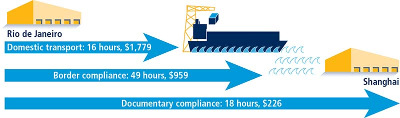
Source: Doing Business database.
Although Doing Business collects and publishes data on the time and cost for domestic transport, it does not use these data in calculating the distance to frontier score for trading across borders or the ranking on the ease of trading across borders. The main reason for this is that the time and cost for domestic transport are affected by many external factors—such as the geography and topography of the transit territory, road capacity and general infrastructure, proximity to the nearest port or border, and the location of warehouses where the traded goods are stored—and so are not directly influenced by an economy’s trade policies and reforms.
The data on trading across borders are gathered through a questionnaire administered to local freight forwarders, customs brokers, port authorities and traders. Questionnaire responses are verified through several rounds of follow-up communication with respondents as well as by contacting third parties and consulting public sources. The questionnaire data are confirmed through teleconference calls or on-site visits in most economies.
If an economy has no formal, large-scale, private sector cross-border trade taking place as a result of government restrictions, armed conflict or a natural disaster, it is considered a “no practice” economy. A “no practice” economy receives a distance to frontier score of 0 for all the trading across borders indicators.
To make the data comparable across economies, several assumptions are made about the traded goods and the transactions:
▪ For each of the 190 economies covered by Doing Business, it is assumed that a shipment travels from a warehouse in the largest business city of the exporting economy to a warehouse in the largest business city of the importing economy. For 11 economies the data are also collected, under the same case study assumptions, for the second largest business city (table 12A.1).
▪ The import and export case studies assume different traded products. It is assumed that each economy imports a standardized shipment of 15 metric tons of containerized auto parts (HS 8708) from its natural import partner—the economy from which it imports the largest value (price times quantity) of auto parts. It is assumed that each economy exports the product of its comparative advantage (defined by the largest export value) to its natural export partner—the economy that is the largest purchaser of this product. Precious metal and gems, mineral fuels, oil products, live animals, residues and waste of foods and products as well as pharmaceuticals are excluded from the list of possible export products, however, and in these cases the second largest product category is considered as needed.14
▪ A shipment is a unit of trade. Export shipments do not necessarily need to be containerized, while import shipments of auto parts are assumed to be containerized.
▪ If government fees are determined by the value of the shipment, the value is assumed to be $50,000.
▪ The product is new, not secondhand or used merchandise.
▪ The exporting/importing firm hires and pays for a freight forwarder or customs broker (or both) and pays for all costs related to international shipping, domestic transport, clearance and mandatory inspections by customs and other government agencies, port or border handling, documentary compliance fees and the like.
▪ The mode of transport is the one most widely used for the chosen export or import product and the trading partner, as is the seaport or land border crossing.
▪ All electronic submissions of information requested by any government agency in connection with the shipment are considered to be documents obtained, prepared and submitted during the export or import process.
▪ A port or border is defined as a place (seaport or land border crossing) where merchandise can enter or leave an economy.
▪ Government agencies considered relevant are agencies such as customs, port authorities, road police, border guards, standardization agencies, ministries or departments of agriculture or industry, national security agencies, central banks and any other government authorities.
Time is measured in hours, and 1 day is 24 hours (for example, 22 days are recorded as 22 × 24 = 528 hours). If customs clearance takes 7.5 hours, the data are recorded as is. Alternatively, suppose that documents are submitted to a customs agency at 8:00 a.m., are processed overnight and can be picked up at 8:00 a.m. the next day. In this case the time for customs clearance would be recorded as 24 hours because the actual procedure took 24 hours.
Insurance cost and informal payments for which no receipt is issued are excluded from the costs recorded. Costs are reported in U.S. dollars. Contributors are asked to convert local currency into U.S. dollars based on the exchange rate prevailing on the day they answer the questionnaire. Contributors are private sector experts in international trade logistics and are informed about exchange rates and their movements.
Documentary compliance captures the time and cost associated with compliance with the documentary requirements of all government agencies of the origin economy, the destination economy and any transit economies (table 12.15). The aim is to measure the total burden of preparing the bundle of documents that will enable completion of the international trade for the product and partner pair assumed in the case study. As a shipment moves from Mumbai to New York City, for example, the freight forwarder must prepare and submit documents to the customs agency in India, to the port authorities in Mumbai and to the customs agency in New York City.
TABLE 12.15 What do the indicators on the time and cost to export and import cover?
Documentary compliance |
Obtaining, preparing and submitting documents during transport, clearance, inspections and port or border handling in origin economy |
Obtaining, preparing and submitting documents required by destination economy and any transit economies |
Covers all documents required by law and in practice, including electronic submissions of information as well as non-shipment-specific documents necessary to complete the trade |
Border compliance |
Customs clearance and inspections by customs |
Inspections by other agencies (if applied to more than 10% of shipments) |
Port or border handling at most widely used port or border of economy |
Domestic transport |
Loading and unloading of shipment at warehouse, dry port or border |
Transport by most widely used mode between warehouse and terminal or dry port |
Transport by most widely used mode between terminal or dry port and most widely used border or port |
Traffic delays and road police checks while shipment is en route |
The time and cost for documentary compliance include the time and cost for obtaining documents (such as time spent to get the document issued and stamped); preparing documents (such as time spent gathering information to complete the customs declaration or certificate of origin); processing documents (such as time spent waiting for the relevant authority to issue a phytosanitary certificate); presenting documents (such as time spent showing a port terminal receipt to port authorities); and submitting documents (such as time spent submitting a customs declaration to the customs agency in person or electronically).
All electronic or paper submissions of information requested by any government agency in connection with the shipment are considered to be documents obtained, prepared and submitted during the export or import process. All documents prepared by the freight forwarder or customs broker for the product and partner pair assumed in the case study are included regardless of whether they are required by law or in practice. Any documents prepared and submitted so as to get access to preferential treatment—for example, a certificate of origin—are included in the calculation of the time and cost for documentary compliance. Any documents prepared and submitted because of a perception that they ease the passage of the shipment are also included (for example, freight forwarders may prepare a packing list because in their experience this reduces the probability of physical or other intrusive inspections).
In addition, any documents that are mandatory for exporting or importing are included in the calculation of time and cost. Documents that need to be obtained only once are not counted, however. And Doing Business does not include documents needed to produce and sell in the domestic market—such as certificates of third-party safety standards testing that may be required to sell toys domestically—unless a government agency needs to see these documents during the export process.
Border compliance captures the time and cost associated with compliance with the economy’s customs regulations and with regulations relating to other inspections that are mandatory in order for the shipment to cross the economy’s border, as well as the time and cost for handling that takes place at its port or border. The time and cost for this segment include time and cost for customs clearance and inspection procedures conducted by other government agencies. For example, the time and cost for conducting a phytosanitary inspection would be included here.
The computation of border compliance time and cost depends on where the border compliance procedures take place, who requires and conducts the procedures and what is the probability that inspections will be conducted. If all customs clearance and other inspections take place at the port or border, the time estimate for border compliance takes this simultaneity into account. It is entirely possible that the border compliance time and cost could be negligible or zero, as in the case of trade between members of the European Union or other customs unions.
If some or all customs or other inspections take place at other locations, the time and cost for these procedures are added to the time and cost for those that take place at the port or border. In Kazakhstan, for example, all customs clearance and inspections take place at a customs post in Almaty that is not at the land border between Kazakhstan and China. In this case border compliance time is the sum of the time spent at the terminal in Almaty and the handling time at the border.
Doing Business asks contributors to estimate the time and cost for clearance and inspections by customs agencies—defined as documentary and physical inspections for the purpose of calculating duties by verifying product classification, confirming quantity, determining origin and checking the veracity of other information on the customs declaration. (This category includes all inspections aimed at preventing smuggling.) These are clearance and inspection procedures that take place in the majority of cases and thus are considered the “standard” case. The time and cost estimates capture the efficiency of the customs agency of the economy.
Doing Business also asks contributors to estimate the total time and cost for clearance and inspections by customs and all other government agencies for the specified product. These estimates account for inspections related to health, safety, phytosanitary standards, conformity and the like, and thus capture the efficiency of agencies that require and conduct these additional inspections.
If inspections by agencies other than customs are conducted in 20% or fewer cases, the border compliance time and cost measures take into account only clearance and inspections by customs (the standard case). If inspections by other agencies take place in more than 20% of cases, the time and cost measures account for clearance and inspections by all agencies. Different types of inspections may take place with different probabilities—for example, scanning may take place in 100% of cases while physical inspection occurs in 5% of cases. In situations like this, Doing Business would count the time only for scanning because it happens in more than 20% of cases while physical inspection does not. The border compliance time and cost for an economy do not include the time and cost for compliance with the regulations of any other economy.
Domestic transport captures the time and cost associated with transporting the shipment from a warehouse in the largest business city of the economy to the most widely used seaport, airport or land border of the economy. For 11 economies the data are also collected for the second largest business city (table 12A.1). This set of procedures captures the time for (and cost of) the actual transport; any traffic delays and road police checks; as well as time spent on loading or unloading at the warehouse or border. For a coastal economy with an overseas trading partner, domestic transport captures the time and cost from the loading of the shipment at the warehouse until the shipment reaches the economy’s port (figure 12.15). For an economy trading through a land border, domestic transport captures the time and cost from the loading of the shipment at the warehouse until the shipment reaches the economy’s land border (figure 12.16).
FIGURE 12.16 What makes up the time and cost to export to a regional trading partner?
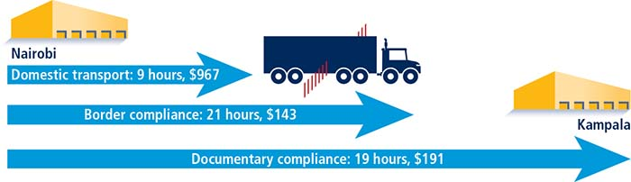
Source: Doing Business database.
FIGURE 12.17 Trading across borders: time and cost to export and import
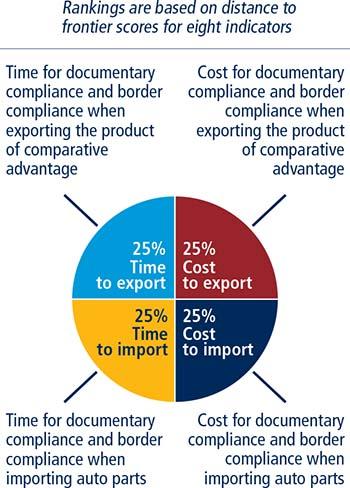
Note: The time and cost for domestic transport and the number of documents to export and import are measured but do not count for the rankings.
The time and cost estimates are based on the most widely used mode of transport (truck, train, riverboat) and the most widely used route (road, border posts) as reported by contributors. In the overwhelming majority of cases all contributors in an economy agree on the mode and route. In the few remaining cases Doing Business consulted additional contributors to get a sense of why there was disagreement. In these cases time and cost estimates are based on the mode and route chosen by the majority of contributors. For the 11 economies for which data are collected for both the largest and the second largest business city, Doing Business allows the most widely used route and the most widely used mode of transport to be different for the two cities. For example, shipments from Delhi are transported by train to Mundra port for export, while shipments from Mumbai travel by truck to Nhava Sheva port to be exported.
In the export case study, as noted, Doing Business does not assume a containerized shipment, and time and cost estimates may be based on the transport of 15 tons of noncontainerized products. In the import case study auto parts are assumed to be containerized. In the cases where cargo is containerized, the time and cost for transport and other procedures are based on a shipment consisting of homogeneous cargo belonging to a single Harmonized System (HS) classification code. This assumption is particularly important for inspections, because shipments of homogeneous products are often subject to fewer and shorter inspections than shipments of products belonging to various HS codes.
In some cases the shipment travels from the warehouse to a customs post or terminal for clearance or inspections and then travels onward to the port or border. In these cases the domestic transport time is the sum of the time for both transport segments. The time and cost for clearance or inspections are included in the measures for border compliance, however, not in those for domestic transport.
The trading across borders indicator set records the time and cost associated with the logistical process of exporting and importing goods every year. Depending on the impact on the data, certain changes are classified as reforms and listed in the summaries of Doing Business reforms in 2015/16 section of the report in order to acknowledge the implementation of significant changes. Reforms are divided into two types: those that make it easier to do business and those that make it more difficult to do business. The trading across borders indicator uses a standard criterion to recognize a reform.
The aggregate gap on the overall distance to frontier of the indicator set is used to assess the impact of data changes. Any data update that leads to a change of 2 or more percentage points on the relative distance to frontier gap is classified as a reform (for more details on the relative gap, see the chapter on the distance to frontier and ease of doing business ranking). For example if the implementation of a single window system reduces time or cost in a way that the overall relative gap decreases by 2 percentage points or more, such change is classified as a reform. Minor shipping fee updates or other small changes on the indicators that have an aggregate impact of less than 2 percentage points on the relative gap are not classified as a reform, yet, but their impact is still reflected on the most updated indicators for this indicator set.
The data details on trading across borders can be found for each economy at http://www.doingbusiness.org.
Doing Business measures the time and cost for resolving a commercial dispute through a local first-instance court (table 12.16) and the quality of judicial processes index, evaluating whether each economy has adopted a series of good practices that promote quality and efficiency in the court system. The data are collected through study of the codes of civil procedure and other court regulations as well as questionnaires completed by local litigation lawyers and judges. The ranking of economies on the ease of enforcing contracts is determined by sorting their distance to frontier scores for enforcing contracts. These scores are the simple average of the distance to frontier scores for each of the component indicators (figure 12.18).
TABLE 12.16 What do the indicators on the efficiency of resolving a commercial dispute measure?
Time required to enforce a contract through the courts (calendar days) |
Time to file and serve the case |
Time for trial and to obtain the judgment |
Time to enforce the judgment |
Cost required to enforce a contract through the courts (% of claim) |
Average attorney fees |
Court costs |
Enforcement costs |
FIGURE 12.18 Enforcing contracts: efficiency and quality of commercial dispute resolution
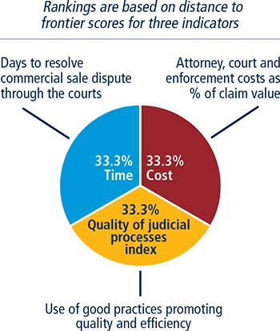
The data on time and cost are built by following the step-by-step evolution of a commercial sale dispute (figure 12.19). The data are collected for a specific court for each city covered, under the assumptions about the case described below. The court is the one with jurisdiction over disputes worth 200% of income per capita or $5,000, whichever is greater. The name of the relevant court in each economy is published on the Doing Business website at http://www.doingbusiness.org/data/exploretopics/enforcing-contracts. For the 11 economies for which the data are also collected for the second largest business city, the name of the relevant court in that city is given as well.
FIGURE 12.19 What are the time and cost to resolve a commercial dispute through a local first-instance court?
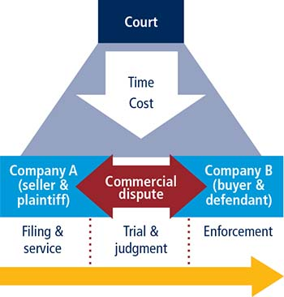
▪ The value of the claim is equal to 200% of the economy’s income per capita or $5,000, whichever is greater.
▪ The dispute concerns a lawful transaction between two businesses (Seller and Buyer), both located in the economy’s largest business city. For 11 economies the data are also collected for the second largest business city (table 12A.1). Pursuant to a contract between the businesses, Seller sells some custom-made furniture to Buyer worth 200% of the economy’s income per capita or $5,000, whichever is greater. After Seller delivers the goods to Buyer, Buyer refuses to pay the contract price, alleging that the goods are not of adequate quality. Because they were custom-made, Seller is unable to sell them to anyone else.
▪ Seller (the plaintiff) sues Buyer (the defendant) to recover the amount under the sales agreement. The dispute is brought before the court located in the economy’s largest business city with jurisdiction over commercial cases worth 200% of income per capita or $5,000, whichever is greater. As noted, for 11 economies the data are also collected for the second largest business city.
▪ At the outset of the dispute, Seller decides to attach Buyer’s movable assets (for example, office equipment and vehicles) because Seller fears that Buyer may hide its assets or otherwise become insolvent.
▪ The claim is disputed on the merits because of Buyer’s allegation that the quality of the goods was not adequate. Because the court cannot decide the case on the basis of documentary evidence or legal title alone, an expert opinion is given on the quality of the goods. If it is standard practice in the economy for each party to call its own expert witness, the parties each call one expert witness. If it is standard practice for the judge to appoint an independent expert, the judge does so. In this case the judge does not allow opposing expert testimony.
▪ Following the expert opinion, the judge decides that the goods delivered by Seller were of adequate quality and that Buyer must pay the contract price. The judge thus renders a final judgment that is 100% in favor of Seller.
▪ Buyer does not appeal the judgment. Seller decides to start enforcing the judgment as soon as the time allocated by law for appeal lapses.
▪ Seller takes all required steps for prompt enforcement of the judgment. The money is successfully collected through a public sale of Buyer’s movable assets (for example, office equipment and vehicles).
Time is recorded in calendar days, counted from the moment the plaintiff decides to file the lawsuit in court until payment. This includes both the days when actions take place and the waiting periods in between. The average duration of three different stages of dispute resolution is recorded: the completion of service of process (time to file and serve the case), the issuance of judgment (time for trial and to obtain the judgment) and the recovery of the claim value through a public sale (time for enforcement of the judgment).
Cost is recorded as a percentage of the claim value, assumed to be equivalent to 200% of income per capita or $5,000, whichever is greater. Three types of costs are recorded: court costs, enforcement costs and average attorney fees.
Court costs include all costs that Seller (plaintiff) must advance to the court, regardless of the final cost borne by Seller. Court costs include the fees that must be paid to obtain an expert opinion. Enforcement costs are all costs that Seller (plaintiff) must advance to enforce the judgment through a public sale of Buyer’s movable assets, regardless of the final cost borne by Seller. Average attorney fees are the fees that Seller (plaintiff) must advance to a local attorney to represent Seller in the standardized case, regardless of final reimbursement. Bribes are not taken into account.
The quality of judicial processes index measures whether each economy has adopted a series of good practices in its court system in four areas: court structure and proceedings, case management, court automation and alternative dispute resolution (table 12.17).
TABLE 12.17 What do the indicators on the quality of judicial processes measure?
Court structure and proceedings index (0–5) |
Availability of specialized commercial court, division or section |
Availability of small claims court and/or simplified procedure for small claims |
Availability of pretrial attachment |
Criteria used to assign cases to judges |
Evidentiary weight of woman’s testimony |
Case management index (0–6) |
Regulations setting time standards for key court events |
Regulations on adjournments and continuances |
Availability of performance measurement mechanisms |
Availability of pretrial conference |
Availability of electronic case management system for judges |
Availability of electronic case management system for lawyers |
Court automation index (0–4) |
Ability to file initial complaint electronically |
Ability to serve initial complaint electronically |
Ability to pay court fees electronically |
Publication of judgments |
Alternative dispute resolution index (0–3) |
Arbitration |
Voluntary mediation and/or conciliation |
Quality of judicial processes index (0–18) |
Sum of the court structure and proceedings, case management, court automation and alternative dispute resolution indices |
The court structure and proceedings index has five components:
▪ Whether a specialized commercial court or a section dedicated solely to hearing commercial cases is in place. A score of 1.5 is assigned if yes; 0 if no.
▪ Whether a small claims court or a fast-track procedure for small claims is in place. A score of 1 is assigned if such a court or procedure is in place, it is applicable to all civil cases and the law sets a cap on the value of cases that can be handled through this court or procedure. If small claims are handled by a stand-alone court, the point is assigned only if this court applies a simplified procedure. An additional score of 0.5 is assigned if parties can represent themselves before this court or during this procedure. If no small claims court or simplified procedure is in place, a score of 0 is assigned.
▪ Whether plaintiffs can obtain pretrial attachment of the defendant’s movable assets if they fear the assets may be moved out of the jurisdiction or otherwise dissipated. A score of 1 is assigned if yes; 0 if no.
▪ Whether cases are assigned randomly and automatically to judges throughout the competent court. A score of 1 is assigned if the assignment of cases is random and automated; 0.5 if it is random but not automated; 0 if it is neither random nor automated.
▪ Whether a woman’s testimony carries the same evidentiary weight in court as a man’s. A score of -1 is assigned if the law differentiates between the evidentiary value of a woman’s testimony and that of a man; 0 if it does not.
The index ranges from 0 to 5, with higher values indicating a more sophisticated and streamlined court structure. In Bosnia and Herzegovina, for example, a specialized commercial court is in place (a score of 1.5), and small claims can be resolved through a dedicated court in which self-representation is allowed (a score of 1.5). Plaintiffs can obtain pretrial attachment of the defendant’s movable assets if they fear dissipation during trial (a score of 1). Cases are assigned randomly through an electronic case management system (a score of 1). A woman’s testimony carries the same evidentiary weight in court as a man’s (a score of 0). Adding these numbers gives Bosnia and Herzegovina a score of 5 on the court structure and proceedings index.
The case management index has six components:
▪ Whether any of the applicable laws or regulations on civil procedure contain time standards for at least three of the following key court events: (i) service of process; (ii) first hearing; (iii) filing of the statement of defense; (iv) completion of the evidence period; (v) filing of testimony by expert; and (vi) submission of the final judgment. A score of 1 is assigned if such time standards are available and respected in more than 50% of cases; 0.5 if they are available but not respected in more than 50% of cases; 0 if there are time standards for less than three of these key court events or for none.
▪ Whether there are any laws regulating the maximum number of adjournments or continuances that can be granted, whether adjournments are limited by law to unforeseen and exceptional circumstances and whether these rules are respected in more than 50% of cases. A score of 1 is assigned if all three conditions are met; 0.5 if only two of the three conditions are met; 0 if only one of the conditions is met or if none are.
▪ Whether there are any performance measurement reports that can be generated about the competent court to monitor the court’s performance, to track the progress of cases through the court and to ensure compliance with established time standards. A score of 1 is assigned if at least two of the following four reports are made publicly available: (i) time to disposition report; (ii) clearance rate report; (iii) age of pending cases report; and (iv) single case progress report. A score of 0 is assigned if only one of these reports is available or if none are.
▪ Whether a pretrial conference is among the case management techniques used before the competent court and at least three of the following issues are discussed during the pretrial conference: (i) scheduling (including the time frame for filing motions and other documents with the court); (ii) case complexity and projected length of trial; (iii) possibility of settlement or alternative dispute resolution; (iv) exchange of witness lists; (v) evidence; (vi) jurisdiction and other procedural issues; and (vii) narrowing down of contentious issues. A score of 1 is assigned if a pretrial conference in which at least three of these events are discussed is held within the competent court; 0 if not.
▪ Whether judges within the competent court can use an electronic case management system for at least four of the following purposes: (i) to access laws, regulations and case law; (ii) to automatically generate a hearing schedule for all cases on their docket; (iii) to send notifications (for example, e-mails) to lawyers; (iv) to track the status of a case on their docket; (v) to view and manage case documents (briefs, motions); (vi) to assist in writing judgments; (vii) to semiautomatically generate court orders; and (viii) to view court orders and judgments in a particular case. A score of 1 is assigned if an electronic case management system is available that judges can use for at least four of these purposes; 0 if not.
▪ Whether lawyers can use an electronic case management system for at least four of the following purposes: (i) to access laws, regulations and case law; (ii) to access forms to be submitted to the court; (iii) to receive notifications (for example, e-mails); (iv) to track the status of a case; (v) to view and manage case documents (briefs, motions); (vi) to file briefs and documents with the court; and (vii) to view court orders and decisions in a particular case. A score of 1 is assigned if an electronic case management system is available that lawyers can use for at least four of these purposes; 0 if not.
The index ranges from 0 to 6, with higher values indicating a more qualitative and efficient case management system. In Croatia, for example, time standards for at least three key court events are established in applicable civil procedure instruments and are respected in more than 50% of cases (a score of 1). The law stipulates that adjournments can be granted only for unforeseen and exceptional circumstances and this rule is respected in more than 50% of cases (a score of 0.5). A time to disposition report and a clearance rate report can be generated about the competent court (a score of 1). A pretrial conference is among the case management techniques used before the Zagreb Commercial Court (a score of 1). An electronic case management system satisfying the criteria outlined above is available to judges (a score of 1) and to lawyers (a score of 1). Adding these numbers gives Croatia a score of 5.5 on the case management index, the highest score attained by any economy on this index.
The court automation index has four components:
▪ Whether the initial complaint can be filed electronically through a dedicated platform (not e-mail or fax) within the relevant court. A score of 1 is assigned if yes; 0 if no.
▪ Whether the initial complaint can be served on the defendant electronically, through a dedicated system or by e-mail, fax or SMS (short message service). A score of 1 is assigned if yes; 0 if no.
▪ Whether court fees can be paid electronically, either through a dedicated platform or through online banking. A score of 1 is assigned if yes; 0 if no.
▪ Whether judgments rendered by local courts are made available to the general public through publication in official gazettes, in newspapers or on the internet. A score of 1 is assigned if judgments rendered in commercial cases at all levels are made available to the general public; 0.5 if only judgments rendered at the appeal and supreme court level are made available to the general public; 0 in all other instances.
The index ranges from 0 to 4, with higher values indicating a more automated, efficient and transparent court system. In Korea, for example, the initial summons can be filed online (a score of 1), it can be served on the defendant electronically (a score of 1), and court fees can be paid electronically as well (a score of 1). In addition, judgments in commercial cases at all levels are made publicly available through the internet (a score of 1). Adding these numbers gives Korea a score of 4 on the court automation index.
The alternative dispute resolution index has six components:
▪ Whether domestic commercial arbitration is governed by a consolidated law or consolidated chapter or section of the applicable code of civil procedure encompassing substantially all its aspects. A score of 0.5 is assigned if yes; 0 if no.
▪ Whether commercial disputes of all kinds—aside from those dealing with public order, public policy, bankruptcy, consumer rights, employment issues or intellectual property—can be submitted to arbitration. A score of 0.5 is assigned if yes; 0 if no.
▪ Whether valid arbitration clauses or agreements are enforced by local courts in more than 50% of cases. A score of 0.5 is assigned if yes; 0 if no.
▪ Whether voluntary mediation, conciliation or both are a recognized way of resolving commercial disputes. A score of 0.5 is assigned if yes; 0 if no.
▪ Whether voluntary mediation, conciliation or both are governed by a consolidated law or consolidated chapter or section of the applicable code of civil procedure encompassing substantially all their aspects. A score of 0.5 is assigned if yes; 0 if no.
▪ Whether there are any financial incentives for parties to attempt mediation or conciliation (for example, if mediation or conciliation is successful, a refund of court filing fees, an income tax credit or the like). A score of 0.5 is assigned if yes; 0 if no.
The index ranges from 0 to 3, with higher values associated with greater availability of alternative dispute resolution mechanisms. In Israel, for example, arbitration is regulated through a dedicated statute (a score of 0.5), all relevant commercial disputes can be submitted to arbitration (a score of 0.5), and valid arbitration clauses are usually enforced by the courts (a score of 0.5). Voluntary mediation is a recognized way of resolving commercial disputes (a score of 0.5), it is regulated through a dedicated statute (a score of 0.5), and part of the filing fees is reimbursed if the process is successful (a score of 0.5). Adding these numbers gives Israel a score of 3 on the alternative dispute resolution index.
The quality of judicial processes index is the sum of the scores on the court structure and proceedings, case management, court automation and alternative dispute resolution indices. The index ranges from 0 to 18, with higher values indicating better and more efficient judicial processes.
The enforcing contracts indicator set tracks changes related to the efficiency and quality of commercial dispute resolution systems every year. Depending on the impact on the data, certain changes are classified as reforms and listed in the summaries of Doing Business reforms in 2015/2016 section of the report in order to acknowledge the implementation of significant changes. Reforms are divided into two types: those that make it easier to do business and those changes that make it more difficult to do business. The enforcing contracts indicator set uses three criteria to recognize a reform.
First, all changes in laws and regulations that have any impact on the economy’s score on the quality of judicial processes index are classified as reforms. Examples of reforms impacting the quality of judicial processes index include measures to introduce electronic filing of the initial complaint, the creation of a commercial court or division, or the introduction of dedicated systems to resolve small claims. Changes affecting the quality of judicial processes index can be different in magnitude and scope and still be considered a reform. For example, implementing a new electronic case management system for the use of judges and lawyers represents a reform with a 2-point increase in the index, while introducing incentives for the parties to use mediation represents a reform with a 0.5-point increase in the index.
Second, changes that have an impact on the time and cost to resolve a dispute may also be classified as reforms depending on the magnitude of the changes. According to the enforcing contracts methodology, any updates in legislation leading to a change of 2 or more percentage points on the relative distance to frontier gap (for more details, see the chapter on the distance to frontier and ease of doing business ranking) of the time and cost indicators is classified as a reform. Changes with lower impact are not classified as reforms but they are still reflected on the most updated indicators.
Third, occasionally the enforcing contracts indicator set will acknowledge legislative changes with no current impact on the data as reforms. This option is typically reserved to legislative changes of exceptional magnitude such as sizeable revisions of the applicable civil procedure laws.
The data details on enforcing contracts can be found for each economy at http://www.doingbusiness.org. This methodology was initially developed by Djankov and others (2003) and is adopted here with several changes. The quality of judicial processes index was introduced in Doing Business 2016. The good practices tested in this index were developed on the basis of internationally recognized good practices promoting judicial efficiency.
Doing Business studies the time, cost and outcome of insolvency proceedings involving domestic entities as well as the strength of the legal framework applicable to judicial liquidation and reorganization proceedings. The data for the resolving insolvency indicators are derived from questionnaire responses by local insolvency practitioners and verified through a study of laws and regulations as well as public information on insolvency systems. The ranking of economies on the ease of resolving insolvency is determined by sorting their distance to frontier scores for resolving insolvency. These scores are the simple average of the distance to frontier scores for the recovery rate and the strength of insolvency framework index (figure 12.20).
FIGURE 12.20 Resolving insolvency: recovery rate and strength of insolvency framework
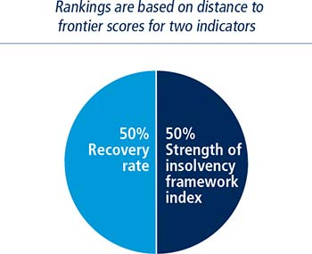
The recovery rate is calculated based on the time, cost and outcome of insolvency proceedings in each economy. To make the data on the time, cost and outcome of insolvency proceedings comparable across economies, several assumptions about the business and the case are used.
The business:
▪ Is a limited liability company.
▪ Operates in the economy’s largest business city. For 11 economies the data are also collected for the second largest business city (table 12A.1).
▪ Is 100% domestically owned, with the founder, who is also chairman of the supervisory board, owning 51% (no other shareholder holds more than 5% of shares).
▪ Has downtown real estate, where it runs a hotel, as its major asset.
▪ Has a professional general manager.
▪ Has 201 employees and 50 suppliers, each of which is owed money for the last delivery.
▪ Has a 10-year loan agreement with a domestic bank secured by a mortgage over the hotel’s real estate property. A universal business charge (an enterprise charge) is also assumed in economies where such collateral is recognized. If the laws of the economy do not specifically provide for an enterprise charge but contracts commonly use some other provision to that effect, this provision is specified in the loan agreement.
▪ Has observed the payment schedule and all other conditions of the loan up to now.
▪ Has a market value, operating as a going concern, of 100 times income per capita or $200,000, whichever is greater. The market value of the company’s assets, if sold piecemeal, is 70% of the market value of the business.
The business is experiencing liquidity problems. The company’s loss in 2015 reduced its net worth to a negative figure. It is January 1, 2016. There is no cash to pay the bank interest or principal in full, due the next day, January 2. The business will therefore default on its loan. Management believes that losses will be incurred in 2016 and 2017 as well. But it expects 2016 cash flow to cover all operating expenses, including supplier payments, salaries, maintenance costs and taxes, though not principal or interest payments to the bank.
The amount outstanding under the loan agreement is exactly equal to the market value of the hotel business and represents 74% of the company’s total debt. The other 26% of its debt is held by unsecured creditors (suppliers, employees, tax authorities).
The company has too many creditors to negotiate an informal out-of-court workout. The following options are available: a judicial procedure aimed at the rehabilitation or reorganization of the company to permit its continued operation; a judicial procedure aimed at the liquidation or winding-up of the company; or a judicial debt enforcement procedure (foreclosure or receivership) against the company.
The bank wants to recover as much as possible of its loan, as quickly and cheaply as possible. The unsecured creditors will do everything permitted under the applicable laws to avoid a piecemeal sale of the assets. The majority shareholder wants to keep the company operating and under his control. Management wants to keep the company operating and preserve its employees’ jobs. All the parties are local entities or citizens; no foreign parties are involved.
Time for creditors to recover their credit is recorded in calendar years (table 12.18). The period of time measured by Doing Business is from the company’s default until the payment of some or all of the money owed to the bank. Potential delay tactics by the parties, such as the filing of dilatory appeals or requests for extension, are taken into consideration.
TABLE 12.18 What do the indicators on debt recovery in insolvency measure?
Time required to recover debt (years) |
Measured in calendar years |
Appeals and requests for extension are included |
Cost required to recover debt (% of debtor’s estate) |
Measured as percentage of estate value |
Court fees |
Fees of insolvency administrators |
Lawyers’ fees |
Assessors’ and auctioneers’ fees |
Other related fees |
Outcome |
Whether the business continues operating as a going concern or whether its assets are sold piecemeal |
Recovery rate for secured creditors (cents on the dollar) |
Measures the cents on the dollar recovered by secured creditors |
Present value of debt recovered |
Official costs of the insolvency proceedings are deducted |
Depreciation of furniture is taken into account |
Outcome for the business (survival or not) affects the maximum value that can be recovered |
The cost of the proceedings is recorded as a percentage of the value of the debtor’s estate. The cost is calculated on the basis of questionnaire responses and includes court fees and government levies; fees of insolvency administrators, auctioneers, assessors and lawyers; and all other fees and costs.
Recovery by creditors depends on whether the hotel business emerges from the proceedings as a going concern or the company’s assets are sold piecemeal. If the business continues operating, 100% of the hotel value is preserved. If the assets are sold piecemeal, the maximum amount that can be recovered is 70% of the value of the hotel.
The recovery rate is recorded as cents on the dollar recovered by secured creditors through judicial reorganization, liquidation or debt enforcement (foreclosure or receivership) proceedings (figure 12.21). The calculation takes into account the outcome: whether the business emerges from the proceedings as a going concern or the assets are sold piecemeal. Then the costs of the proceedings are deducted (1 cent for each percentage point of the value of the debtor’s estate). Finally, the value lost as a result of the time the money remains tied up in insolvency proceedings is taken into account, including the loss of value due to depreciation of the hotel furniture. Consistent with international accounting practice, the annual depreciation rate for furniture is taken to be 20%. The furniture is assumed to account for a quarter of the total value of assets. The recovery rate is the present value of the remaining proceeds, based on end-2015 lending rates from the International Monetary Fund’s International Financial Statistics, supplemented with data from central banks and the Economist Intelligence Unit.
FIGURE 12.21 Recovery rate is a function of the time, cost and outcome of insolvency proceedings against a local company
If an economy had zero completed cases a year over the past five years involving a judicial reorganization, judicial liquidation or debt enforcement procedure (foreclosure or receivership), the economy receives a “no practice” mark on the time, cost and outcome indicators. This means that creditors are unlikely to recover their money through a formal legal process. The recovery rate for “no practice” economies is zero. In addition, a “no practice” economy receives a score of 0 on the strength of insolvency framework index even if its legal framework includes provisions related to insolvency proceedings (liquidation or reorganization).
The strength of insolvency framework index is based on four other indices: commencement of proceedings index, management of debtor’s assets index, reorganization proceedings index and creditor participation index (figure 12.22; table 12.19).
FIGURE 12.22 Strength of insolvency framework index measures the quality of insolvency laws that govern relations between debtors, creditors and the court
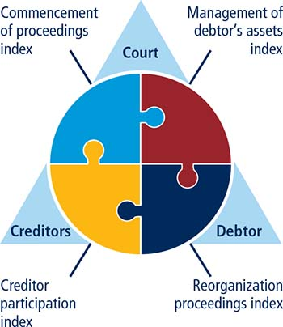
TABLE 12.19 What do the indicators on the strength of the insolvency framework measure?
Commencement of proceedings index (0–3) |
Availability of liquidation and reorganization to debtors and creditors |
Standards for commencement of insolvency proceedings |
Management of debtor’s assets index (0–6) |
Continuation and rejection of contracts during insolvency |
Avoidance of preferential and undervalued transactions |
Post-commencement finance |
Reorganization proceedings index (0–3) |
Approval and content of reorganization plan |
Creditor participation index (0–4) |
Creditors’ participation in and rights during liquidation and reorganization proceedings |
Strength of insolvency framework index (0–16) |
Sum of the commencement of proceedings, management of debtor’s assets, reorganization proceedings and creditor participation indices |
The commencement of proceedings index has three components:
▪ Whether debtors can initiate both liquidation and reorganization proceedings. A score of 1 is assigned if debtors can initiate both types of proceedings; 0.5 if they can initiate only one of these types (either liquidation or reorganization); 0 if they cannot initiate insolvency proceedings.
▪ Whether creditors can initiate both liquidation and reorganization proceedings. A score of 1 is assigned if creditors can initiate both types of proceedings; 0.5 if they can initiate only one of these types (either liquidation or reorganization); 0 if they cannot initiate insolvency proceedings.
▪ What standard is used for commencement of insolvency proceedings. A score of 1 is assigned if a liquidity test (the debtor is generally unable to pay its debts as they mature) is used; 0.5 if the balance sheet test (the liabilities of the debtor exceed its assets) is used; 1 if both the liquidity and balance sheet tests are available but only one is required to initiate insolvency proceedings; 0.5 if both tests are required; 0 if a different test is used.
The index ranges from 0 to 3, with higher values indicating greater access to insolvency proceedings. In Bulgaria, for example, debtors can initiate both liquidation and reorganization proceedings (a score of 1), but creditors can initiate only liquidation proceedings (a score of 0.5). Either the liquidity test or the balance sheet test can be used to commence insolvency proceedings (a score of 1). Adding these numbers gives Bulgaria a score of 2.5 on the commencement of proceedings index.
The management of debtor’s assets index has six components:
▪ Whether the debtor (or an insolvency representative on its behalf) can continue performing contracts essential to the debtor’s survival. A score of 1 is assigned if yes; 0 if continuation of contracts is not possible or if the law contains no provisions on this subject.
▪ Whether the debtor (or an insolvency representative on its behalf) can reject overly burdensome contracts. A score of 1 is assigned if yes; 0 if rejection of contracts is not possible or if the law contains no provisions on this subject.
▪ Whether transactions entered into before commencement of insolvency proceedings that give preference to one or several creditors can be avoided after proceedings are initiated. A score of 1 is assigned if yes; 0 if avoidance of such transactions is not possible or if the law contains no provisions on this subject.
▪ Whether undervalued transactions entered into before commencement of insolvency proceedings can be avoided after proceedings are initiated. A score of 1 is assigned if yes; 0 if avoidance of such transactions is not possible or if the law contains no provisions on this subject.
▪ Whether the insolvency framework includes specific provisions that allow the debtor (or an insolvency representative on its behalf), after commencement of insolvency proceedings, to obtain financing necessary to function during the proceedings. A score of 1 is assigned if yes; 0 if obtaining post-commencement finance is not possible or if the law contains no provisions on this subject.
▪ Whether post-commencement finance receives priority over ordinary unsecured creditors during distribution of assets. A score of 1 is assigned if yes; 0.5 if post-commencement finance is granted superpriority over all creditors, secured and unsecured; 0 if no priority is granted to post-commencement finance or if the law contains no provisions on this subject.
The index ranges from 0 to 6, with higher values indicating more advantageous treatment of the debtor’s assets from the perspective of the company’s stakeholders. In Mozambique, for example, debtors can continue essential contracts (a score of 1) and reject burdensome ones (a score of 1) during insolvency proceedings. The insolvency framework allows avoidance of preferential transactions (a score of 1) and undervalued ones (a score of 1). But the insolvency framework contains no provisions allowing post-commencement finance (a score of 0) or granting priority to such finance (a score of 0). Adding these numbers gives Mozambique a score of 4 on the management of debtor’s assets index.
The reorganization proceedings index has three components:
▪ Whether the reorganization plan is voted on only by the creditors whose rights are modified or affected by the plan. A score of 1 is assigned if yes; 0.5 if all creditors vote on the plan, regardless of its impact on their interests; 0 if creditors do not vote on the plan or if reorganization is not available.
▪ Whether creditors entitled to vote on the plan are divided into classes, each class votes separately and the creditors within each class are treated equally. A score of 1 is assigned if the voting procedure has these three features; 0 if the voting procedure does not have these three features or if reorganization is not available.
▪ Whether the insolvency framework requires that dissenting creditors receive as much under the reorganization plan as they would have received in liquidation. A score of 1 is assigned if yes; 0 if no such provisions exist or if reorganization is not available.
The index ranges from 0 to 3, with higher values indicating greater compliance with internationally accepted practices. Nicaragua, for example, has no judicial reorganization proceedings and therefore receives a score of 0 on the reorganization proceedings index. In Estonia, another example, only creditors whose rights are affected by the reorganization plan are allowed to vote (a score of 1). The reorganization plan divides creditors into classes, each class votes separately and creditors within the same class are treated equally (a score of 1). But there are no provisions requiring that the return to dissenting creditors be equal to what they would have received in liquidation (a score of 0). Adding these numbers gives Estonia a score of 2 on the reorganization proceedings index.
The creditor participation index has four components:
▪ Whether creditors participate in the selection of an insolvency representative. A score of 1 is assigned if yes; 0 if no.
▪ Whether creditors are required to approve the sale of substantial assets of the debtor in the course of insolvency proceedings. A score of 1 is assigned if yes; 0 if no.
▪ Whether an individual creditor has the right to access financial information about the debtor during insolvency proceedings. A score of 1 is assigned if yes; 0 if no.
▪ Whether an individual creditor can object to a decision of the court or of the insolvency representative to approve or reject claims against the debtor brought by the creditor itself and by other creditors. A score of 1 is assigned if yes; 0 if no.
The index ranges from 0 to 4, with higher values indicating greater participation of creditors. In Iceland, for example, the court appoints the insolvency representative, without creditors’ approval (a score of 0). The insolvency representative decides unilaterally on the sale of the debtor’s assets (a score of 0). Any creditor can inspect the records kept by the insolvency representative (a score of 1). And any creditor is allowed to challenge a decision of the insolvency representative to approve all claims if this decision affects the creditor’s rights (a score of 1). Adding these numbers gives Iceland a score of 2 on the creditor participation index.
The strength of insolvency framework index is the sum of the scores on the commencement of proceedings index, management of debtor’s assets index, reorganization proceedings index and creditor participation index. The index ranges from 0 to 16, with higher values indicating insolvency legislation that is better designed for rehabilitating viable firms and liquidating nonviable ones.
The resolving insolvency indicator set tracks changes related to the efficiency and quality of insolvency framework every year. Depending on the impact on the data, certain changes are classified as reforms and listed in the summaries of Doing Business reforms in 2015/2016 section of the report in order to acknowledge the implementation of significant changes. Reforms are divided into two types: those that make it easier to do business and those changes that make it more difficult to do business. The resolving insolvency indicator set uses three criteria to recognize a reform.
First, all changes to laws and regulations that have any impact on the economy’s score on the strength of insolvency framework index are classified as reforms. Examples of reforms impacting the strength of insolvency framework index include changes in the commencement standard for insolvency proceedings, the introduction of reorganization procedures for the first time and measures to regulate post-commencement credit and its priority. Changes affecting the strength of insolvency framework index can be different in magnitude and scope and still be considered a reform. For example implementing a post-commencement credit provision and designating it with certain priorities represents a reform with a potential 2 point increase in the index, while changing the commencement standard from the balance sheet test to the liquidity test represents a reform with a 0.5 points increase in the index.
Second, changes that have an impact on the time, cost or outcome of insolvency proceedings may also be classified as reforms depending on the magnitude of the changes. According to the resolving insolvency methodology any update in legislation leading to a change of 2 or more percentage points on the relative distance to frontier gap (for more details, see the chapter on the distance to frontier and ease of doing business ranking) of the time, cost and outcome indicators is classified as a reform. Changes with lower impact are not classified as reforms but their impact is still reflected on the most updated indicators.
Third, occasionally the resolving insolvency indicator set will acknowledge legislative changes with no current impact on the data as reforms. This option is typically reserved to legislative changes of exceptional magnitude such as sizeable revisions of corporate insolvency laws.
This methodology was developed by Djankov, Hart and others (2008) and is adopted here with several changes. The strength of insolvency framework index was introduced in Doing Business 2015. The good practices tested in this index were developed on the basis of the World Bank’s Principles for Effective Insolvency and Creditor/Debtor Regimes (World Bank 2011) and the United Nations Commission on International Trade Law’s Legislative Guide on Insolvency Law (UNCITRAL 2004a)
Doing Business studies the flexibility of regulation of employment, specifically as it relates to the areas of hiring, working hours and redundancy. Doing Business also measures several aspects of job quality such as the availability of maternity leave, paid sick leave and the equal treatment of men and women at the workplace (figure 12.23).
FIGURE 12.23 What do the labor market regulation indicators cover?
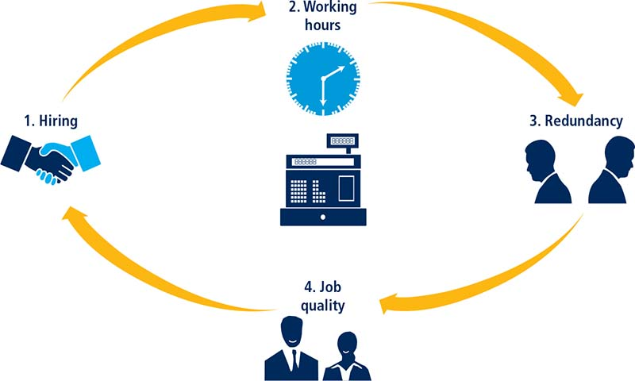
Doing Business 2017 presents the data for the labor market regulation indicators in an annex. The report does not present rankings of economies on these indicators or include this indicator set in the aggregate distance to frontier score or ranking on the ease of doing business. Detailed data collected on labor market regulation are available on the Doing Business website (http://www.doingbusiness.org). The data on labor market regulation are based on a detailed questionnaire on employment regulations that is completed by local lawyers and public officials. Employment laws and regulations as well as secondary sources are reviewed to ensure accuracy.
To make the data comparable across economies, several assumptions about the worker and the business are used.
The worker:
▪ Is a cashier in a supermarket or grocery store, age 19, with one year of work experience.15
▪ Is a full-time employee.
▪ Is not a member of the labor union, unless membership is mandatory
The business:
▪ Is a limited liability company (or the equivalent in the economy).
▪ Operates a supermarket or grocery store in the economy’s largest business city. For 11 economies the data are also collected for the second largest business city (table 12A.1).
▪ Has 60 employees.
▪ Is subject to collective bargaining agreements if such agreements cover more than 50% of the food retail sector and apply even to firms that are not party to them.
▪ Abides by every law and regulation but does not grant workers more benefits than those mandated by law, regulation or (if applicable) collective bargaining agreements.
Data on employment cover three areas: hiring, working hours and redundancy (table 12.20).
TABLE 12.20 What do the labor market regulation indicators measure?
Employment |
Hiring |
Whether fixed-term contracts are prohibited for permanent tasks |
Maximum duration of fixed-term contracts (in months), including renewals |
Minimum wage for a cashier, age 19, with one year of work experience (US$/month) |
Ratio of minimum wage to value added per worker |
Working hours |
Maximum number of working days per week |
Premium for night work, work on weekly rest day and overtime work (% of hourly pay) |
Whether there are restrictions on night work, weekly holiday work and overtime work |
Whether nonpregnant and nonnursing women can work the same night hours as men |
Paid annual vacation days for workers with 1 year of tenure, 5 years of tenure and 10 years of tenure. |
Redundancy |
Length of maximum probationary period (in months) for permanent employees |
Whether redundancy is allowed as grounds for termination |
Whether third-party notification is required for termination of a redundant worker or group of workers |
Whether third-party approval is required for termination of a redundant worker or group of workers |
Whether employer is obligated to reassign or retrain workers prior to making them redundant and to follow priority rules for redundancy and reemployment |
Redundancy cost (weeks of salary) |
Notice requirements and severance payments due when terminating a redundant worker, expressed in weeks of salary |
Job quality |
Whether the law mandates equal remuneration for work of equal value |
Whether the law mandates nondiscrimination based on gender in hiring |
Whether the law mandates paid or unpaid maternity leave |
Minimum length of paid maternity leave (calendar days) |
Whether employees on maternity leave receive 100% of wages |
Availability of five fully paid days of sick leave a year |
Whether unemployment protection is available after one year of employment |
Minimum duration of contribution period (in months) required for unemployment protection |
Data on hiring cover four questions: (i) whether fixed-term contracts are prohibited for permanent tasks; (ii) the maximum cumulative duration of fixed-term contracts; (iii) the minimum wage for a cashier, age 19, with one year of work experience and (iv) the ratio of the minimum wage to the average value added per worker.16
Data on working hours cover nine questions: (i) the maximum number of working days allowed per week; (ii) the premium for night work (as a percentage of hourly pay); (iii) the premium for work on a weekly rest day (as a percentage of hourly pay); (iv) the premium for overtime work (as a percentage of hourly pay); (v) whether there are restrictions on night work; (vi) whether nonpregnant and nonnursing women can work the same night hours as men; (vii) whether there are restrictions on weekly holiday work; (viii) whether there are restrictions on overtime work; and (ix) the average paid annual leave for workers with 1 year of tenure, 5 years of tenure and 10 years of tenure.
Data on redundancy cover nine questions: (i) the length of the maximum probationary period (in months) for permanent employees; (ii) whether redundancy is allowed as a basis for terminating workers; (iii) whether the employer needs to notify a third party (such as a government agency) to terminate one redundant worker; (iv) whether the employer needs to notify a third party to terminate a group of nine redundant workers; (v) whether the employer needs approval from a third party to terminate one redundant worker; (vi) whether the employer needs approval from a third party to terminate a group of nine redundant workers; (vii) whether the law requires the employer to reassign or retrain a worker before making the worker redundant; (viii) whether priority rules apply for redundancies; and (ix) whether priority rules apply for reemployment.
Redundancy cost measures the cost of advance notice requirements and severance payments due when terminating a redundant worker, expressed in weeks of salary. The average value of notice requirements and severance payments applicable to a worker with 1 year of tenure, a worker with 5 years and a worker with 10 years is considered. One month is recorded as 4 and 1/3 weeks.
Doing Business introduced new data on job quality in 2015. Doing Business 2017 covers eight questions on job quality (i) whether the law mandates equal remuneration for work of equal value; (ii) whether the law mandates nondiscrimination based on gender in hiring; (iii) whether the law mandates paid or unpaid maternity leave;17 (iv) the minimum length of paid maternity leave (in calendar days);18 (v) whether employees on maternity leave receive 100% of wages;19 (vi) the availability of five fully paid days of sick leave a year; (vii) whether a worker is eligible for an unemployment protection scheme after one year of service; and (viii) the minimum duration of the contribution period (in months) required for unemployment protection.
The labor market regulation indicator set tracks changes in labor rules every year. Depending on the impact on the data, certain changes are classified as reforms and listed in the summaries of Doing Business reforms in 2015/2016 section of the report in order to acknowledge the implementation of significant changes. Examples include a change in the maximum duration of fixed-term contracts, regulation of weekly holiday work, redundancy rules, notice requirements and severance payments for redundant workers, introduction of unemployment insurance and laws that mandate gender nondiscrimination in hiring and equal remuneration for work of equal value in line with ILO standards. The introduction of a minimum wage in the private sector is recognized as a major reform and acknowledged in the reform summary. Changes in minimum wages are reflected in the Doing Business data but not acknowledged in the reform summary. Similarly, the introduction of maternity leave would be acknowledged in the reform summary but not an increase in the duration of maternity leave. Occasionally the labor market regulation indicator set will acknowledge legislative changes in areas not directly measured by the indicators. This option is reserved for legislative changes of exceptional magnitude, such as the introduction of a new labor code.
The data details on labor market regulation can be found for each economy at http://www.doingbusiness.org. The Doing Business website also provides historical data sets. The methodology was developed by Botero and others (2004). Doing Business 2017 does not present rankings of economies on the labor market regulation indicators.
TABLE 12A.1 Cities covered in each economy by the Doing Business report
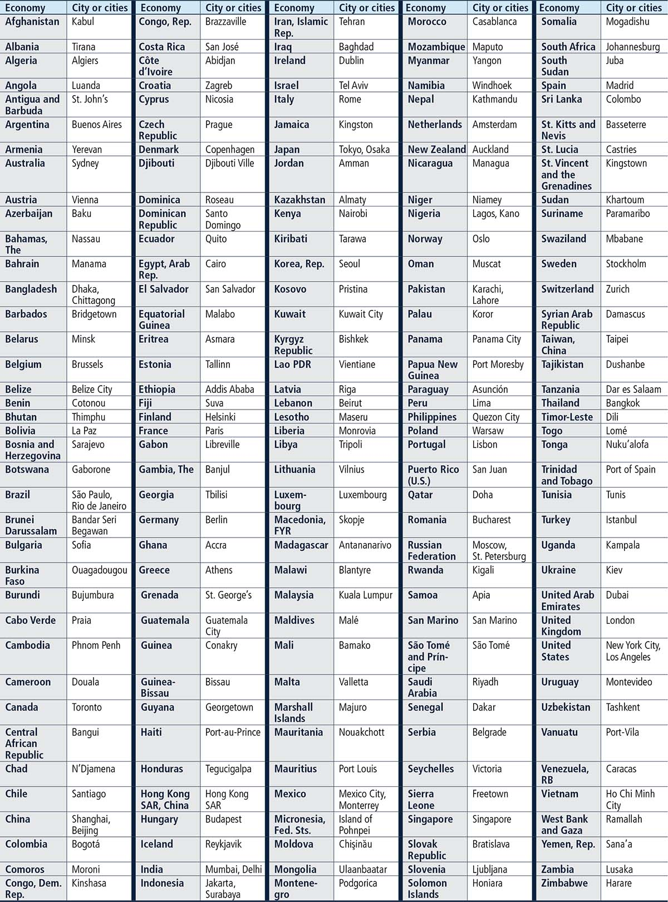
1. The data for paying taxes refer to January-December 2015.
2. These are Bangladesh, Brazil, China, India, Indonesia, Japan, Mexico, Nigeria, Pakistan, the Russian Federation and the United States.
3. This correction rate reflects changes that exceed 5% up or down.
4. According to a study by Chakravorty, Pelli and Marchand (2014) based on evidence from India between 1994 and 2005, a higher-quality electricity supply, with no more than two outages a week (or no more than about 100 a year), leads to higher nonagricultural incomes.
5. This matter is usually regulated by stock exchange or securities laws. Points are awarded only to economies with more than 10 listed firms in their most important stock exchange.
6. When evaluating the regime of liability for company directors for a prejudicial related-party transaction, Doing Business assumes that the transaction was duly disclosed and approved. Doing Business does not measure director liability in the event of fraud.
7. This component is revised in Doing Business 2017.
8. This component is revised in Doing Business 2017.
9. This component is revised in Doing Business 2017.
10. This component is revised in Doing Business 2017.
11. PwC refers to the network of member firms of PricewaterhouseCoopers International Limited (PwCIL) or, as the context requires, individual member firms of the PwC network. Each member firm is a separate legal entity and does not act as agent of PwCIL or any other member firm. PwCIL does not provide any services to clients. PwCIL is not responsible or liable for the acts or omissions of any of its member firms nor can it control the exercise of their professional judgment or bind them in any way. No member firm is responsible or liable for the acts or omissions of any other member firm nor can it control the exercise of another member firm’s professional judgment or bind another member firm or PwCIL in any way.
12. The nonlinear distance to frontier score for the total tax rate is equal to the distance to frontier score for the total tax rate to the power of 0.8.
13. The economies for which a multiple of three times income per capita has been used are Honduras, Mozambique, West Bank and Gaza, and Zimbabwe. Those for which a multiple of two times income per capita has been used are Belize, Benin, Bosnia and Herzegovina, Burkina Faso, the Central African Republic, Chad, Fiji, Guatemala, Haiti, Kenya, Lesotho, Madagascar, the Federated States of Micronesia, Morocco, Nepal, Nicaragua, Niger, Nigeria, the Philippines, the Solomon Islands, South Africa, South Sudan, Tanzania, Togo, Vanuatu and Zambia.
14. To identify the trading partners and export product for each economy, Doing Business collected data on trade flows for the most recent four-year period from international databases such as the United Nations Commodity Trade Statistics Database (UN Comtrade). For economies for which trade flow data were not available, data from ancillary government sources (various ministries and departments) and World Bank Group country offices were used to identify the export product and natural trading partners.
15. The case study assumption that the worker is 19 years old with one year of work experience is considered only for the calculation of the minimum wage. For all other questions where the tenure of the worker is relevant, Doing Business collects data for workers with 1, 5 and 10 years of tenure.
16. The average value added per worker is the ratio of an economy’s GNI per capita to the working-age population as a percentage of the total population.
17. If no maternity leave is mandated by law, parental leave is measured if applicable.
18. The minimum number of days that legally have to be paid by the government, the employer or both. If no maternity leave is mandated by law, parental leave is measured if applicable.
19. If no maternity leave is mandated by law, parental leave is measured if applicable.